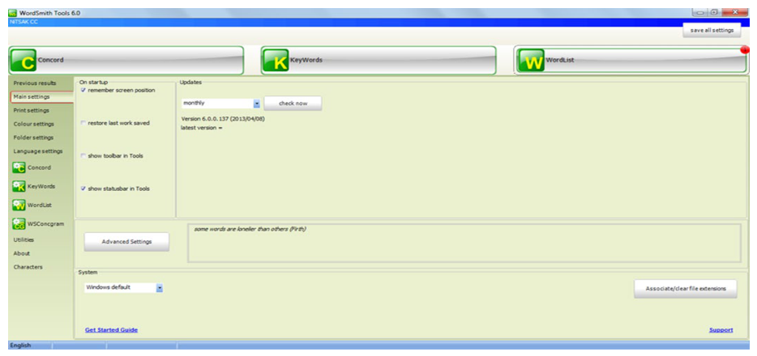
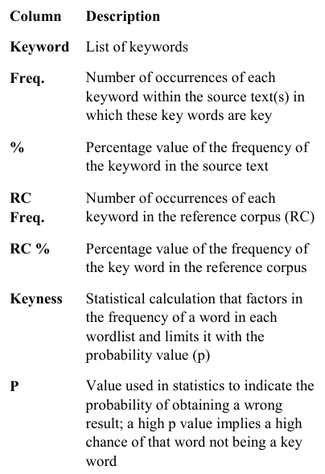
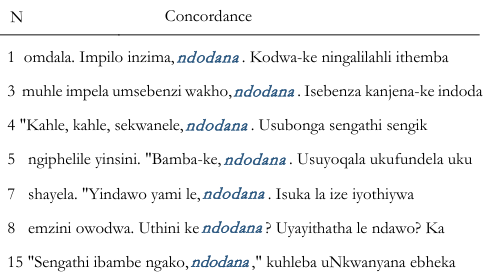

RAIL 2021Tafsiri ya mashine
Zana za Wordsmith kama Kiwezo cha Uchambuzi wa Maandishi
Tafsiri ya mashine, haijakaguliwa na binadamu. Makala asili ndiyo toleo la rejeo; sentensi zilizopigiwa mstari ni zile ambazo ukaguzi wa kiotomatiki haukuwa na uhakika nazo.
Proceedings of the 2nd Workshop on Resources for African Indigenous Languages (RAIL 2021), Journal of the Digital Humanities Association of Southern Africa.
Tafsiri ya Ernst van Gassen (Arktos AI Lab), yenye leseni CC BY-SA 4.0 kama makala asili. Matumizi tena yanaruhusiwa kwa kutaja mwandishi; shiriki marekebisho kwa masharti yale yale. Waandishi asili hawajakagua wala kuidhinisha tafsiri hii.
Maandishi matupu ya kutumia tena, pamoja na leseni yake: Kiswahili · LESENI
Taasisi
Rooweither Mabuya
South African Centre for Digital Language Resources
North West University
Anwani za barua pepe zimeondolewa kwa sababu za faragha. Zinapatikana katika PDF asilia.
Muhtasari
Mchakato wa ukuzaaji maarifa umeelezwa kama mchakato uliopangwa wa kuharakisha ukuaji na maendeleo ya lugha za kiasili za Afrika Kusini ili kuimarisha mwingiliano wake mzuri na maendeleo ya kisasa, nadharia na dhana (Finlayson & Madiba, 2002). Korasi hutumika kukuza maarifa ya kijarabati kuhusu lugha. Korasi ni mkusanyiko wa matini zinazotokea kiasili zinazotokana na matumizi halisi ya lugha katika maandishi au usemi (cf. Sinclair, 1991). Maandishi haya kisha husindika, kuhifadhiwa na kupatikana kwa njia ya kompyuta kwa ajili ya matumizi katika kuendeleza rasilimali za elektroniki za lugha. Hivyo ni rasilimali muhimu katika maendeleo ya Teknolojia ya Lugha ya Kibinadamu ya isiZulu. Kwa hivyo, korasi maalumu ziliundwa kwa ajili ya utafiti huu na zilitumika kama msingi wa kuchunguza matumizi nyeti ya isiZulu kwa kurejelea hali ya lugha isiHlonipho. Isimu ya korasi hutoa mtazamo wenye usahili zaidi wa lugha kuliko kutazama ndani, hisia na visa. Utafiti huu ulinufaika kutokana na matumizi ya kifurushi cha programu ya WordSmith Tools toleo la 6, ambacho kilimwezesha mtafiti kutumia programu tofauti kwa wakati mmoja kuchanganua data.
Maneno Muhimu
Ujenzi wa Korasi, WordSmith Tools, Lugha kwa Madhumuni Mahususi, isiHlonipho
1 Utangulizi
Ni lazima ieleweke kwamba utafiti huu umejikita kwenye korasi na kwa hiyo unawasilisha mjadala wa kina kuhusu muundo wa korasi, yaani, Korasi Rejea (RC) na Korasi za Uchanganuzi (AC) ambazo zilitengenezwa kwa ajili ya utafiti huu. Pia inajadili programu ya kompyuta iliyotumika kuchunguza korasi hizo. Mbinu za uchimbaji nusu-otomatiki na maswali ya konkodansi pia yamefafanuliwa. Njia ya isimu ya korasi (CL) ilitumika kuchambua usikivu wa kijinsia katika Kizulu.
IsiZulu ndiyo lugha ya kwanza inayozungumzwa zaidi nchini Afrika Kusini, ikiwa na wasemaji milioni 9 (Census, 2011,) na inatumiwa katika vyombo vya habari, na katika bunge la kitaifa na la jimbo. IsiHlonipho kwa ujumla hufasiliwa kuwa zoea linalohusisha matumizi ya msamiati na namna hususa ya kusema ambayo ni mahususi kwa jinsia fulani (Makoni, 2014).
Korasi nne za LSP ziliundwa kwa ajili ya utafiti huu na zilitumika kama msingi wa kuchunguza matumizi nyeti ya lugha ya isiZulu. Hizi ziliundwa kutokana na mada zifuatazo za vitabu: Insila kaShaka, Bafa Baphela, Umdonsiswano, na Amandl' Esambane, WordSmith Tools ni mkusanyiko jumuishi wa programu ambao hutumika kuchunguza jinsi maneno yanavyotenda katika korasi.
2 Ujenzi wa Korasi
Isimu ya korasi ni mbinu ya kiisimu inayotegemea uundaji wa korasi. Franz (1996: 7) anabainisha kwamba. "Isimu inayotegemea korasi inalenga lugha asilia ya mazungumzo au maandishi, tofauti na sentensi za mfano za kibinafsi ambazo zimeundwa kuelezea nadharia ya kisarufi". Kwa hiyo, korasi ni mkusanyiko wa maandishi yanayotokea kiasili yaliyotokana na matumizi halisi ya lugha katika umbo la kuandika au kusema. Kisha huprosesiwa, kuhifadhiwa na kupatikana kwa kutumia kompyuta. Korasi inakuwa aina sahihi ya data ya kiisimu inayoakisi lugha inayochunguzwa.
Ngcobo na Nomdebevana (2010:187) wanaonyesha kwamba, "mojawapo ya mahitaji ya maendeleo ya lugha ni upangaji wa korasi yake". Lugha huhifadhiwa kwa ajili ya vizazi vijavyo na pia huendelezwa kupitia ujenzi wa corpus, ambayo husaidia upatikanaji wake kwa umma na huwezesha maendeleo ya teknolojia ya lugha ya binadamu. Corpus ni data halisi ya lugha ambayo imeundwa na kukusanywa kulingana na itifaki au mchakato maalum wa sampuli.
Ni muhimu kutambua kwamba korasi nyingi za ukubwa na aina mbalimbali zimetengenezwa kwa ajili ya lugha tofautitofauti zinazozungumzwa duniani kote. Baadhi ya hizi zinapatikana kupitia hazina inayoitwa jukwaa la Sketch Engine. Sketch Engine ni jukwaa la usimamizi na uchambuzi wa korasi na uundaji wa korasi ambalo linapatikana kupitia malipo ya usajili. Ina korasi katika lugha tisini (90), huku baadhi kama Kiingereza zikiwa na korasi nyingi. Lugha za Afrika kwenye Sketch Engine ni Afrikaans, Kiarabu, Igbo, Setswana, Kiswahili na Yoruba.
Kuna korasi chache sana katika Lugha za Afrika. Baadhi ya korasi ambazo zimetengenezwa kwa Lugha za Afrika hazionekani kwenye Sketch Engine na nyingine zinahitaji ruhusa ya kuzifikia. Hili linazidishwa na ukweli kwamba nyingi ya korasi hizi hazipo barani Afrika bali zinahifadhiwa na kutunzwa katika taasisi za Ulaya (Khumalo, 2015:24).
Ndani ya muktadha wa Afrika Kusini, Chuo Kikuu cha Pretoria (UP) kimeongoza juhudi kubwa ya kutengeneza korasi za ndani. Tangu kazi hii ilipoanza mwanzoni mwa miaka ya 1990, UP imetengeneza korasi katika lugha rasmi zote za nchi. Jedwali 1 linaonyesha korasi hizi na ukubwa wake.

Jedwali la 1: Korasi katika Lugha za Afrika Kusini (De Schryver na Prinsloo, 2000)
Ofisi ya Mipango na Maendeleo ya Lugha ya Chuo Kikuu (ULPDO) katika Chuo Kikuu cha KwaZulu-Natal (UKZN) ilianza zoezi kubwa la kujenga Korasi ya Kitaifa ya isiZulu (INC) kama mojawapo ya mipango mikuu ya chuo kikuu ya kuendeleza isiZulu kama lugha ya utafiti, ufundishaji na ujifunzaji. INC ilijaribiwa mwaka 2014 kwa idadi ya kuvutia ya tokeni milioni 1.3. Mwishoni mwa 2017, ilifikia hatua muhimu ya tokeni zaidi ya milioni 20. Hii inapita Korasi ya awali ya Kizulu ya Pretoria (PZC) yenye tokeni milioni 5.7 na Korasi ya Ukwabelana yenye tokeni 100 000. PZC ni korasi ya LGP na Ukwabelana ni ya LSP iliyo na maelezo ambayo inatumika kama nyenzo ya kujifunzia. INC ni korasi ya ufuatiliaji ya LGP ambayo ina uwiano katika suala la maandishi na maudhui ya kimada.
Korasi zinaainishwa kulingana na njia, muundo, ukubwa, vigezo vya lugha, na uwekaji alama na maelezo (McEnery et al., 2012). Kila moja ya vipengele hivi vitajadiliwa zaidi kama ifuatavyo:
2.1 Njia ya uwasilishaji
Hii inarejelea ukweli kwamba maandishi yanaweza kuchapishwa au kuandikwa kwa mkono na kwamba maandishi yanayounda korasi yanaweza kuwa ya kielektroniki au hotuba iliyodijitishwa.
2.2 Mbinu ya muundo
Muundo unahusu namna ambayo mpango wa ukusanyaji wa korasi unatekelezwa. Njia inayotumiwa kukusanya korasi yaweza ama kuwa yenye usawaziko ama ya kubahatisha. Mizani inahusu uwakilishi wa maandiko yaliyochaguliwa ili kuunda korasi. Njia ya fursa inategemea maandishi yoyote yanayopatikana kwa wawasilishi ili kuongezwa kwenye korasi.
2.3 Ukubwa
Ukubwa unaweza kuwa thabiti au usio na kikomo, ikimaanisha kuwa ni korasi ya ufuatiliaji. Ile ya kwanza inarejelea taipolojia ambapo ukubwa wa korasi umepangwa, na mara tu ukusanyaji unapofikia lengo lililowekwa, ujenzi wa korasi unasimama. Hii ya pili inarejelea korasi kubwa na inayoendelea kukua. Korasi kubwa zaidi inachukuliwa kuwa bora na ilitumika katika utafiti huu kama RC. Kwa hiyo utafiti huu ulitumia korasi ndogo (AC) na kubwa (RC).
2.4 Lugha vigezo
Hii inarejelea lugha ambayo faili za maandishi za korasi zimeandikwa. Mjenzi wa korasi atakayejenga korasi ya lugha moja atakuwa na lugha moja ambayo atatumia kuandika matini zake, na anaweza kuchagua kutaja marejeo yote ya lugha nyingine katika matini kama ya kigeni. Vigezo vya lugha vinatofautiana kwa njia nyingi kwa sababu mtafiti anapaswa kuchagua kati ya korasi ya lugha moja na korasi ya lugha nyingi. Maamuzi mengine kuhusu suala hili ni pamoja na kama korasi itakuwa ya wakati mmoja (synchronic) au ya mabadiliko ya wakati (diachronic), korasi ya lugha kwa ujumla au lugha kwa ajili ya matumizi maalum, na lugha iliyowasilishwa kwa maandishi au kwa kuzungumza.
2.5 Uwekaji alama na ufafanuzi
Katika korasi ghafi, maandiko yanayounda korasi hiyo hukusanywa na kuhifadhiwa kama maandishi wazi kwa matumizi katika umbo lake asili. Uwekaji alama au ufafanuzi wa korasi ni mchakato wa kuongeza maandishi ya kifasiri au uchambuzi zaidi kwa njia ya vitambulisho kwenye data ili kuongeza uwezo wake wa kutumika tena. Kwa hivyo korasi inaweza kuwa ghafi (wazi), iliyowekwa alama au iliyofafanuliwa.
Moja ya sifa kuu za korasi ni uwakilishi. Hii inaelezewa kama "kiasi ambacho sampuli inajumuisha masafa yote ya tofauti katika lugha au mabadiliko ya lugha" (Biber, 1993). Kwa hivyo, korasi inapaswa kujitahidi kuakisi lugha kama ilivyo.
Isimu ya korasi inaweza kutumika kuchunguza aina nyingi za maswali ya kiisimu. Ina uwezo wa kutoa maarifa mapya yenye kuvutia sana, ya msingi na mara nyingi ya kushangaza kuhusu lugha na imekuwa mojawapo ya mbinu za kawaida katika uchunguzi wa kiisimu. Uwakilishi wa corpus unategemea sababu mbili. La kwanza ni usawa unaohusisha aina mbalimbali za tanzu na rejista zilizojumuishwa katika sampuli ya korasi, huku la pili likiwa mbinu zinazotumika kuchagua dondoo za maandishi kwa kila tanzu.
Maandishi katika korasi yanahitaji kubadilishwa kuwa muundo wa kielektroniki ili korasi iweze kuendana na programu ya kushughulikia data. Vifaa vya nakala ngumu vinahitaji kuchanganuliwa ili kupata ufikiaji wa kielektroniki wa korasi. Katika utafiti huu data ambayo inaunda corpus ilichaguliwa, kuchambuliwa, kusafishwa, na kisha kuhifadhiwa kielektroniki kwa kutumia programu ya Wordsmith Tools toleo la 6. Ni muhimu kukumbuka kwamba hati yoyote iliyoandaliwa kwa ajili ya uchambuzi wa korasi ni uwakilishi tu wa ile ya awali. Kulingana na Römer na Wulff (2010), "isimu ya korasi inaweza kumsaidia mtafiti kutathmini na kuelezea jambo la kiisimu kwa namna isiyo na upendeleo kwa kiwango kikubwa na hivyo kwa kiasi kikubwa bila kuegemea nadharia fulani".
Faida ya mbinu ya CL ni kwamba inachunguza maneno katika muktadha. Inasaidia katika kulinganisha matumizi ya maneno katika nyaraka tofauti na katika kubainisha jinsi maneno yanavyofanya kazi pamoja. Inatumika kuchunguza na kufanya utafiti wa maswali kadhaa ya lugha na inatoa ufahamu wa mienendo ya lugha, jambo ambalo limewafanya kuwa moja ya mbinu za lugha zinazotumika sana. Isimu ya korasi inategemea kompyuta kwa kasi, usahihi, uaminifu na uthibitisho na wengine.
3 Wordsmith Tools
Sehemu hii inatoa majadiliano ya kina kuhusu programu inayotumika kuuliza korasi ya LSP. Zana mbalimbali za uchambuzi wa korasi zinapatikana. Kadiri uwanja wa CL unavyoendelea, zana kadhaa za programu zilizotengenezwa tayari zimeundwa na kupakizwa pamoja na violesura vya picha vya mtumiaji kama programu za kila siku. Hizi ni maarufu kama wakurugenzi wa corpus, browsers corpus au mifumo ya kuuliza corpus. Zinatoa vifaa vya kutafuta maumbo na mifuatano ya lugha, na kuchambua vipande vya korasi.
Wasimamizi wa corpus wanaweza kuwa wa mtandao au wa desktop, wa kibiashara au wa chanzo wazi, na wametengenezwa kwa ajili ya corpus maalum au ya jumla.
Suluhisho za programu za kompyuta ya mezani ni pamoja na WordSmith (Scott, 1996), Antconc (Anthony, 2011), MonoConc Pro (Barlow, 2000), CasualConc (Imao, 2013), Concapp (Greaves, 2007), na aConCorde (Roberts, Al-Sulaiti, na Atwell, 2006). Utafiti huu ulitumia suluhisho la programu ya WS Tools.
Wilkinson (2011) anasema kwamba "programu nyingi za uchanganuzi wa korasi hujumuisha konkodansi ambayo hupata matukio yote ya neno la utafutaji, au muundo wa utafutaji, na kuyaonyesha katikati ya skrini yako kama onyesho la neno kuu katika muktadha (KWIC), pamoja na kipindi cha maandishi-shirikishi upande wa kushoto na kulia".
Zana za WordSmith ni seti iliyounganishwa ya programu za kuchunguza jinsi maneno hufanya kazi katika korasi. Ilitengenezwa na Mike Scott na toleo la kwanza lilitolewa mwaka wa 1996. Kama mkusanyiko wa programu, WordSmith Tools ina programu tatu zinazotumiwa kuuliza korasi, yaani, konkodansi, neno muhimu, na orodha ya maneno. WordSmith Tools toleo la 6 ni seti ya mipango ambayo inaruhusu udhibiti wa data ya corpus kulingana na frequency, orodha ya maneno, makubaliano, collocations na KWIC. Otlogestwe anaelezea zana hizi kama ifuatavyo; chombo cha orodha ya maneno kinaweza kutumika kutengeneza orodha ya maneno au orodha ya makundi ya maneno kutoka kwa maandishi. Konkodansi inaweza kutoa neno au kishazi chochote katika muktadha ili mtu aweze kuona ni maneno gani mengine yanayotokea karibu nayo. Maneno muhimu huhesabu maneno yanayotumika mara nyingi zaidi katika maandishi (Otlogestwe, 2014: 270). Kielelezo 1 hapa chini inaonyesha interface ya WS Tools na kazi tatu kuu.
Kielelezo 1: Interface ya Concordance, Keyword na kazi Wordlist

Kupanga orodha ya maneno ni muhimu kwa sababu hapa ndipo na jinsi uchunguzi unavyochochewa na kutokezwa kwa uwiano wa juu na wa chini. Kulingana na Römer na Wulff (2010), "[...] hatua ya kwanza muhimu katika kukaribia korasi au maandishi ni kuzalisha orodha ya maneno yote yanayotokea humo pamoja na masafa yake". Orodha ya masafa inatoa anuwai ya aina mbalimbali za maneno, tokeni, au maumbo ambayo hufanya korasi. Orodha ya maneno katika Wordsmith Tools toleo 6 inaweza kutengeneza orodha zilizopangwa kwa alfabeti, uwiano wa juu hadi wa chini.
Ingawa orodha ya maneno hukazia kile ambacho hupatikana mara nyingi katika corpus au andiko, hakituambii ni nini chenye maana au ambacho hutokea mara nyingi isivyo kawaida. Orodha ya maneno muhimu inamwezesha mtafiti kutambua maneno yanayojitokeza zaidi au yanayotokea mara kwa mara bila kutarajiwa katika korasi. Inalinganisha orodha ya maneno ya masafa kulingana na korasi inayochambuliwa (AC) na orodha nyingine ya maneno ya masafa kulingana na RC.
Jedwali 2 linaorodhesha visiguo vinavyotumika katika programu ya Wordsmith Tools ambavyo hutumika wakati wa kupima umuhimu wa maneno wakati AC inapolinganishwa na RC.

Jedwali 2: Akronimi zinazotumika katika programu ya Wordsmith Tools
Konkodansi ni orodha ya kialfabeti ya maneno ya msingi yanayotumika katika kitabu au kundi la kazi. Inaorodhesha kila tukio la kila neno pamoja na muktadha wake wa karibu. Barnbrook (1996) anabainisha kuwa orodha ya konkodansi "inatoa njia rahisi ya kurudisha kila neno katika muktadha wake wa awali, ili maelezo ya matumizi na tabia yake yaweze kuchunguzwa ipasavyo". Konkodansi kwa kawaida huonyeshwa katika muundo wa KWIC, huku neno la utafutaji (au kishazi) likionyeshwa katikati ya skrini na muktadha fulani upande wa kushoto na kulia wake. Makubaliano huonyesha orodha ya maneno maalum au mlolongo wa maneno katika muktadha na ni kituo cha CL kwa sababu inaruhusu upatikanaji wa mifano mingi muhimu ya lugha katika maandiko. Katika maoni yanayojulikana sasa, Firth (1957:179) alitaarifu kwamba "utajua neno kwa kushirikiana nalo". Hii inamaanisha kuwa maneno yanayotumika pamoja yataonekana katika uhusiano wa istilahi kati ya maneno mawili au zaidi ambayo yana mwelekeo wa kutokea pamoja ndani ya maneno machache ya kila mmoja katika maandishi yanayoendelea.
Kulingana na Wodak na Meyer (2016), mbinu ya CL inatoa maoni ya takwimu na ya mshikamano na uchambuzi mfupi wa habari iliyolewea, ikihesabu masafa na vipimo vya umuhimu wa takwimu, pamoja na kuwasilisha vipande vya data ili mwandishi wa utafiti aweze kupata matukio ya pekee ya maneno ya utafutaji, kuchunguza kwa ubora mazingira yake ya uhusiano wa maneno, kuelezea muundo unaonekana wazi na utambulisho wa kazi za mazungumzo.
4 Mikusanyiko
Utafiti wa sasa ulijumuisha korasi ndogo, iliyolengwa ya LSP iliyokusanywa kutoka katika vitabu vinne vya kiada vya fasihi ya isiZulu, navyo ni, Insila KaShaka ya JL Dube (mwandishi wa kiume wa pili katika historia ya uandishi wa isiZulu), Bafa Baphela ya Joyce Jessie Gwayi (mwandishi wa kike wa kwanza katika historia ya uandishi wa isiZulu), Umdonsiswano ya Condy Nxaba (mwandishi wa kiume wa kisasa), na Amandl' Esambane ya Babhekile Ngcobo (mwandishi wa kike wa kisasa). UZulu kaMalandela wa P Lamula ulikuwa kazi ya kwanza ya hadithi iliyoandikwa na mtu wa Kizulu mwaka 1924 na Insila kaShaka ya JL Dube ilikuwa ya pili mwaka 1930. Kitabu cha kwanza kilichoandikwa na mwandishi wa Kizulu kilikuwa Abantu abamnyama lapho abavela khona cha Magema Fuze mwaka 1922 ambacho hakikuwa kazi ya fasihi. Hili lilihitaji kwamba mtafiti atumie kitabu cha JL Dube kwa utafiti huu kwani kilikuwa rahisi kukipata. Kila kimoja cha vitabu hivyo kilitumiwa kama AC. Korasi ya LSP ni korasi maalum ya lugha, ambayo inachunguza lugha inayozuiliwa kwa kikoa fulani (Bowker na Pearson, 2002). Faida ya kutumia korasi za LSP ni kwamba ni rahisi kutambua istilahi maalumu, hivyo kutoa kiasi kikubwa cha taarifa kuhusiana na maneno, marudio, muundo na mtindo katika lugha maalumu. Lugha kwa Madhumuni Maalumu pia ni muhimu katika kutambua tofauti kati ya lugha sanifu na rejesta maalumu pamoja na neolojia (istilahi mpya) zinazojitokeza katika lugha (Weisser, 2016). AC ni korasi ya kiufundi, ikimaanisha kwamba inahusu kikoa maalum. Msingi wa kuchagua maandishi haya ulikuwa ni kuzingatia uchambuzi kwenye Kizulu cha jadi/kizazi cha zamani na Kizulu cha kisasa. Insila kaShaka yenye tokeni 19 425 na Bafa Baphela yenye tokeni 22 103 ziko chini ya enzi ya kimapokeo ya uandishi huku Umdonsiswano yenye tokeni 49 341 na Amandl' Esambane zenye tokeni 31 251 zikifuata njia ya kisasa ya uandishi. Korasi za LSP zilitumika kulinganisha usikivu wa kijinsia katika fasihi ya kimapokeo na ule wa fasihi ya kisasa ili kuchunguza mabadiliko yoyote ya lugha na kuhakikisha uwiano wakati wa kuchunguza korasi. RC ni korasi isiyo ya kiufundi ambayo imeundwa kulingana na Oostdijk et al., (2021) ili kutoa taarifa kamili kuhusu lugha. Inalenga kuwa kubwa vya kutosha kuwakilisha aina zote muhimu za lugha, na msamiati bainifu, ili iweze kutumika kama msingi wa sarufi, kamusi, thesauri na nyenzo nyingine za kumbukumbu za lugha zinazotegemeka. Mfano wa uteuzi kwa kawaida hufafanua idadi ya vigezo vinavyowezesha kujumuishwa kwa vigeu vingi vya kijamii-lugha iwezekanavyo na huelekeza uwiano wa kila aina ya maandiko inayochaguliwa (Oostdijk et al., 2013).
Maandishi yaliyokusanywa kwa ajili ya AC na RC yalichunguzwa na kubadilishwa kwa muundo wa maandishi ya kawaida kwa utangamano wa WordSmith Tools. Uchambuzi wa data unaboreshwa kwa kiwango ambacho data ya korasi imechakatwa na kuainishwa ili kurahisisha utumiaji tena. Kulingana na John Sinclair, korasi inaweza kuwa na alama, ikimaanisha kuwa uchambuzi wa lugha umefanywa kwenye maandishi, au ya tahajia, ikimaanisha kuwa maandishi hayajachambuliwa kwa lugha. Anaiita ile ya pili kuwa korasi ghafi (Sinclair, 1991). Korasi iliyotumika katika utafiti huu ni ghafi na kwa hiyo haina maelezo.
Maandishi manne ya Kizulu yalichambuliwa ili kupima usikivu wa kijinsia kwa kutumia seti ya maneno yanayotokea pamoja yanayojulikana kama koloketi. Hivyo, uchambuzi wa lugha unaoitumia mbinu na zana za CL hauwakilishi lugha yote bali sampuli za maandishi zinazoelezea lugha inayohitaji kuchambuliwa. Vifaa vya corpus vilikusanywa kutoka kwa makundi yaliyochaguliwa kwa makini ya maandishi yaliyochapishwa yaliyoelezwa hapo juu. Takwimu zilikusanywa kwa kukusanya maandishi kutoka kila riwaya / kazi ya fasihi. Korasi ilikusanywa na kuchambuliwa kwa kutumia programu ya Wordsmith Tools (WS Tools). Utafiti ulifaidika na utendaji muhimu wa usindikaji wa data wa WS Tools kama vile zana ya Orodha ya Masafa na zana ya Concordance. Ili kuwezesha uchunguzi wa karibu wa data ya korasi, Orodha ya Maneno na Orodha ya Masafa ziliundwa kutoka kwenye korasi nzima kwa kutumia WS Tools. Kisha uchambuzi wa Concordance ulifanywa kwenye maneno yaliyochaguliwa ya maudhui ambayo yalionekana kuwa ya kufundisha na ya kutoa habari kwa utafiti.
Korasi ilichambuliwa na kuhojiwa kuhusiana na usikivu wa kijinsia. Moja ya faida za CL na Uchambuzi Hakiki wa Diskosi ni kwamba huwezesha uchambuzi wa kimaelezo na kiidadi. Uchambuzi wa kiidadi unalenga kupima na kuelezea ubora wa data ili kuwakilisha kwa namba hali fulani na huchunguza aina na tokeni za jumla, orodha ya maneno na marudio ya neno muhimu la maudhui. Kulingana na Weisser (2016), aina ni neno mwakilishi katika orodha ya marudio ya korasi na tokeni inarejelea tukio binafsi la aina fulani, yaani, idadi ya maneno katika korasi. Orodha ya maneno huorodhesha maneno yanayopatikana katika corpus, ama kwa mpangilio wa kialfabeti ama kwa mpangilio wa frikwensi. Orodha ya marudio hurekodi maneno katika korasi kulingana na idadi ya mara yanavyotumika. Uchambuzi wa kimaelezo huelekea kufafanua uchambuzi wa kiidadi kwa kutambua maneno yanayotokea mara nyingi na yale yanayotokea mara chache. Vipengele muhimu vilivyojitokeza kutokana na mkusanyiko huo vilikuwa vinavyohusiana na jinsi maandiko yalivyowasilisha mjadala wao kuhusu hisia za kijinsia. Hii ilifanywa kwa kutazama maneno yanayotokea kabla na baada ya neno la muktadha na inajulikana kama KWIC. Utafiti hivyo ulinufaika kutokana na mchanganyiko wa busara wa mikabala ya kiidadi na kimaelezo.
5 Kutafuta
AC ni korasi ya LSP yenye maneno yanayoendelea 122 121 na RC ni korasi ya LGP yenye tokeni 2 039 691. Kila kitabu kilichambuliwa kwa ajili ya umuhimu wa maneno kwa kutengwa na dhidi ya maneno muhimu ya kijinsia. Umuhimu wa maneno hurejelea kiwango ambacho maandishi yanaonyesha wasifu mahususi wa kimtindo yanapolinganishwa na seti nyingine ya maandishi. Inakadiriwa kwa kupima tofauti chanya au hasi katika leksimu ya mwandishi(wa) ikilinganishwa na leksimu ya matini katika korasi ya marejeleo ambayo matini ya awali inalinganishwa nayo. Mtafiti alikusanya na kuchambua korasi tano tofauti. Zimepewa lebo Insila kaShaka (AC1), Bafa Baphela (AC2), Umdonsiswano (AC3), Amandl' Esambane (AC4), na mwisho IsiZulu National Corpus, iliyopewa lebo RC.
Ili kubaini umuhimu wa maneno, uwiano wa marudio ya maneno katika AC ulilinganishwa na uwiano wa marudio ya maneno hayo jinsi yanavyoonekana katika korasi ya jumla (RC). Kulingana na Mason na Platt (2006:159) "tunahesabu ni mara ngapi kipengele fulani cha kileksika kinatokea katika maandishi. Kisha tunakokotoa ni mara ngapi tungetarajia kipengele hicho kutokea katika maandishi ya urefu huo, kwa kutumia marudio ya kipengele hicho katika korasi kubwa kama kiashirio. Uwiano kati ya marudio yaliyozingatiwa na marudio yanayotarajiwa basi hutuambia kama neno ni muhimu au la".
Maneno yanayotokea mara nyingi zaidi katika AC kuliko katika RC yana thamani chanya ya umuhimu wa maneno huku yale yanayoonekana mara chache zaidi yakiwa na thamani hasi. Hili lilifunua maneno ambayo ni nyeti kwa jinsia katika isiZulu. Uchanganuzi wa umuhimu wa maneno ulitoa ushahidi wa wazi wa tofauti kati ya usemi wa kiume na usemi wa kike (au uwakilishi wake) katika isiZulu. Katika lugha ya Kiingereza inaeleweka kwamba viambatani vinavyoandamana na mwanamume/mvulana kwa kawaida ni maneno chanya kama vile mwenye nguvu, mrefu, jasiri, n.k. Vile vinavyoandamana na mwanamke/msichana vinahusishwa na kuwa hasi kama vile dhaifu, mwembamba, mwenye hofu, n.k. Kwa kutumia mkabala wa CL, mifumo sawa ya kiparadimu ilichanganuliwa katika utafiti huu kwa kuwa utamaduni wa Kizulu unajulikana kuwa wa mfumo dume. Kulingana na Atanga et al. (2013) matumizi ya isiHlonipho yanahusishwa na udhibiti wa kimfumo dume na udhibiti wa tabia za wanawake. Desturi ya kiisimu ya isiHlonipho inahusishwa na kanuni kali ya tabia (ukuhlonipha). Mathonsi na Gumede (2006) wanabainisha kwamba, Ukuhlonipha humtaka mwanamke wa Kizulu kujizuia kutoa maoni yake moja kwa moja na hadharani kama ishara ya uke wake. Wanawake wanajulikana kuwa wametengwa katika usemi wao katika lugha ya Kizulu na usemi wao ni tofauti na ule wa wanaume kutokana na matumizi ya isiHlonipho. Hata hivyo, jambo hili halifanywi tena kwa upana katika usemi wa wanawake wengi wa kisasa wa Kizulu na kwa kweli wanatumia rejista sawa ya usemi kama wanaume kutokana na mabadiliko ya taratibu ya madaraja, hadhi na mamlaka.
6 Mjadala
Katika uchambuzi wa data, tulichunguza kwanza maneno yanayoelezea kiume ili kuangalia maelezo yoyote ya kipekee kwa kuunda orodha ya maneno. Ni ya kuvutia kwamba maneno yafuatayo yana uwiano wa juu wa marudio; uJeqe, inkosi, uShaka, na izinkomo, na inaonekana kwamba kazi yao inahusiana kwa karibu na ile ya kiume na nguvu.
Orodha ya konkodansi ilianzishwa kwa ajili ya uchanganuzi wa neno izinkomo. Katika utamaduni wa jadi wa Kizulu, ng’ombe huhusishwa na nguvu na utajiri. Katika uchambuzi huu, dhana ya izinkomo inayomilikiwa na wanachama wa kiume wa jamii ni dhahiri; utajiri unarithiwa na wanaume kutoka kizazi hadi kizazi.

Jedwali la 3: Orodha ya Konkodansi ya AC 2
Mahusiano ya mamlaka ni dhahiri katika mistari ya konkodansi iliyochaguliwa hapo juu (tazama Jedwali la 3) ambapo izinkomo inaonyeshwa kuwa mali ya taifa na kama aina ya utajiri katika "[…]useziqoqe zonke izinkomo zesizwe" (amekusanya ng'ombe wote ambao ni mali ya taifa).
Mahusiano ya madaraka ni ya kijadala, na mjadala wenyewe hujumuisha jamii na utamaduni, yanadhihirika katika dondoo hili, ambapo ng'ombe wanawakilishwa kama ishara ya madaraka na utajiri katika jamii ya jadi ya Kizulu. Pia inadhihirika katika konkodansi katika mstari wa 16 kwamba ng'ombe wana thamani ya kimuamala inayofanana na thamani ya kisasa ya kifedha.
Ni wazi kutokana na viambatani katika Jedwali la 3 kwamba izinkomo (ng'ombe) wanahusishwa na madaraka ya kinyama, ya kifalme ya kunyakua ng'ombe (linganisha mstari wa 3). Izinkomo zihusishwa pia na jinsia maalum, ambayo imebainishwa kama maneno yanayotumika pamoja: amabutho (wajeshi), abafana (wavulana), inkosi (mfalme), na -ntshontsh- (ufisadi). Ni wazi kutokana na maana inayohusiana kwamba izinkomo inawakilisha uume na nguvu katika utamaduni wa Zulu na jamii. Kwa kutumia uchanganuzi wa CL, viambatani hivyo kwa hiyo vinasisitiza uonyeshaji wa mahusiano ya madaraka. Mifugo ni aina ya utajiri na utajiri kama huo unahusishwa na uwezo wa kiume na nguvu.

Jedwali la 4: Orodha ya Konkodansi ya AC 3
Jedwali la 4 linawasilisha orodha ya konkodansi ya neno ndodana (mwana) iliyochukuliwa kutoka AC 3. Maneno yanayoambatana na neno ndodana katika mstari wa 1, yanaonyesha wazi kwamba baba anamhimiza mwanawe asipoteze matumaini/imani. Chanya inakaziwa. Katika mstari wa 3, mwana huyo anasifiwa na anasherehekewa kwa sababu ya kuwa mwanamume. Msisitizo ni kwamba 'kufanya vizuri' ndio alama kuu ya uanaume au ukiume "muhle impela umsebenzi wakho, ndodana. Isebenza kanjena-ke indoda" (kazi yako ni ya kuvutia kweli, mwana. Hivi ndivyo hasa mwanamume anavyofanya kazi). Kwa hiyo inazingatiwa kwamba katika utamaduni na jamii ya Kizulu, mafanikio na hisia chanya vinahusishwa na mwanamume.
Faida ya kuchambua konkodansi ni kwamba zinaruhusu mtu kuchunguza kwa karibu maandishi. Hii ni kwa sababu kitu kinachotafutwa kimetengwa na kuangaziwa. Pia inaambatana na muktadha katika pande zote mbili ili kutambua maana ya neno lisilojulikana na kuondoa hisi za matatizo ya maneno. Ni ukweli ulioidhinishwa katika lugha kwamba tunajua zaidi kuhusu neno kupitia jamii inayolishikilia.
Konkodansi huorodhesha matukio yote ya neno linalopatikana katika korasi iliyochaguliwa jambo ambalo huokoa muda kwani mtu halazimiki kupitia kila faili ya maandishi kivyake na kutoa mifano muhimu.
Ni muhimu kutambua kwamba inaonekana kuwa hakuna tofauti katika matumizi ya lugha nyeti ya kijinsia kati ya waandishi wawili wanaoandika katika kipindi kimoja, yaani, maandishi ya jadi ya awali. Inafundisha kwamba ushahidi wa korasi ya AC 2 kutoka kwa mwandishi wa kike unaonyesha neno linalotumika mara nyingi zaidi amabutho 4 (mashujaa) likiwa namba 4 katika orodha ya maneno. Ingawa indlovukazi, 5 (Mama wa Mfalme/Mke wa Mfalme) iko nafasi ya 5 katika orodha ya maneno yanayotumika sana, maneno ya kuvutia kama vile chombo cha jadi cha vita, ngemikhonto, 134 (na mikuki) na majina kama Bhekimpi, 150 (Kuangalia jeshi/Tayari kwa mashambulizi) ni maneno yanayohusishwa na uume.
Mifano hii inaonyesha wazi kwamba hadithi au mazungumzo ya waandishi wa kiume na wa kike yamewekwa ndani ya athari kubwa za kijamii na kitamaduni ambazo zinaonyesha dunia kama iliyotawaliwa na nguvu na ushawishi wa kiume. Hata neno indlovukazi linafafanuliwa kupitia uhusiano wake na uume, ama kama "mama wa mfalme" au "mke wa mfalme". Kwa hiyo korasi AC 2 na AC 3 zinaonyesha wazi kwamba matumizi ya isiZulu yanaegemea kijinsia kwa kuwa taswira za nguvu, utajiri, usahihi, mafanikio, nguvu, vita, ushindi, n.k. zote zinahusishwa na jinsia ya kiume.
Kwa kuzingatia historia ya mfumo dume na utamaduni unaowaona wanawake kama dhaifu, ni wazi kwamba isiZulu ni lugha yenye ubaguzi ambapo wanawake wanaonyeshwa kama dhaifu kuliko jinsia tofauti. Rejista ya isiHlonipho ilitolewa kama mfano mwafaka wa mahusiano yaliyopotoka katika matumizi ya lugha kati ya jinsia katika isiZulu.
Uwepo wa isiHlonipho kama rejista maalum ya jinsia unalazimisha swali la kama isiZulu kama lugha ina njia ya kurejelea jinsia zote mbili bila kukiukwa heshima ya yoyote. Ilikuwa dhahiri kutoka kwenye korasi kwamba wanaume au uume hutazamwa kwa njia chanya, na unahusishwa na maendeleo, huku wanawake au uke aidha hawapo kwenye mjadala au hutazamwa kupitia lenzi za uume kama vile marejeleo kama indlovukazi. Ni wazi kwamba wanawake wataendelea kuwa duni kuliko wanaume kutokana na kanuni za mfumo dume ambazo zimekita mizizi katika utamaduni wa Kizulu. Korasi ilionyesha wazi katika viambatani, kwamba maneno yanayorejelea wanawake mara nyingi huambatana na kipunguo, tofauti na yale yanayorejelea wanaume.
Inafaa kutambua zaidi kwamba hakuna ushahidi wa korasi kutoka kwenye fasihi ya kisasa ya waandishi wa kiume na wa kike unaodokeza mkengeuko mkubwa kutoka kwenye lugha ya kihistoria yenye mwelekeo wa kijinsia iliyopendelea kusherehekea uume kuelekea matumizi ya lugha yasiyoegemea upande wowote na yenye kuzingatia jinsia.
7 Hitimisho
Ili kunakili na kufanya wazi mitazamo kuhusu wanawake, mbinu ya mbinu nyingi ikijumuisha hasa mbinu za kimaelezo na kuungwa mkono na mbinu za kiidadi, ilitumika kuchanganua data. Faida ya mkabala kama huo ni kwamba utajiri na usahihi wa uchanganuzi wa kimaelezo huunganishwa na matokeo yanayotegemeka kitakwimu na yanayoweza kujumlishwa (Schmied, 1993). Kwa ujumla, utafiti wa ubora hutumika kuelezea na kujibu maswali kutoka kwa mtazamo wa mshiriki. Data hutumika kutambua vitu, kuelezea vipengele vya matumizi na kutoa mifano halisi ya maisha ya hivyo. Mchakato wa kiinduktivisti wa tafiti za kimaelezo unaendelea kwa njia ya maswali ya jumla, ukusanyaji wa kiasi kikubwa cha data, uchunguzi makini wa data na kisha uwasilishaji wa matokeo, ambayo yanaweza kutoa majibu ya majaribio kuhusu kile kilichochunguzwa (Glesne and Peshkins, 1992).
Kwa hiyo, utafiti huu ulijumuisha ukusanyaji na utaratibu wa habari za maandishi katika korasi, na uchunguzi na upekuzi wa korasi hiyo ili kutambua uhusiano na mazoea ya kijamii yanayohusiana na jamii au utamaduni wa wasemaji wa isiZulu. Ni muhimu kwamba CDA inahusika na uchunguzi makini na wa muda mrefu wa matukio makuu yanayosababisha na matokeo ya masuala hayo. Kwa hiyo, inahitaji rekodi ya uhusiano wa hatua kwa hatua kati ya maudhui, mazungumzo, jamii na utamaduni.
8 Marejeo
Adolphs, S. 2000. Introducing electronic text analysis. New York: Routledge.
Anthony, L. 2011. AntConc (Version 3.2. 2) [Computer Software]. Tokyo, Japan: Waseda University.
Baker, P. and McEnery, T. 2005. A corpus-based approach to discourses of refugees and asylum seekers in UN and newspaper texts, Journal of Language & Politics, 4:2,197-226.
Barlow, M. 2000. Monoconc Pro 2.0: Athelstan.
Barnbrook, G. 1996. Language and Computers: A Practical Introduction to the Computer Analysis of Language. Edinburgh: Edinburgh University Press.
Biber, D., Conrad, S. and Reppen, R. 1998. Corpus linguistics: Investigating language structure and use. Cambridge University Press.
Bower, L. and Pearson, J. 2002. Working with Specialized Language: A practical guide to using copora. London: Routledge.
Chitauro-Mawema, M. 2006. Gender Sensitivity in Shona Language Use: A lexicographic and corpus-based study of words in context.
Dowling, T. 1988. IsiHlonipho Sabafazi: The Xhosa women's language of respect. A sociolinguistic exploration. MA Thesis, University of Cape Town, South Africa.
Finlayson, R. 1982. Hlonipha - the women's language of avoidance among the Xhosa. South African Journal of African Languages, 1:1, 35-60.
Franz, A. 1996. Automatic Ambiguity Resolution in Natural Language Processing: An Empirical Approach. Tokyo: Springer.
Glesne, C. and Peshkins, A. 1992. Becoming Qualitative Researchers: An introduction. White Plains, NY: Longman.
Hammer, A. and Damascelli, A. T. 2002. Corpus Linguistics and Computational Linguistics: An overview with Special Reference to English. Torino: Celid.
Khumalo, L. 2015a. Advances in Developing corpora in African languages. Kuwala, 1:2, 21-30.
Khumalo, L. 2015b. Semi-automatic Term Extraction for an isiZulu Linguistic Terms Dictionary. Lexikos, 25 (AFRILEX-reeks/series 25:2015), 495-506.
Khumalo, L. n.d. Corpora as agency in the intellectualization of African languages.
Krishnamurthy, R. 2011. Accessing all areas: Corpus Analysis methods in inter-disciplinary applications.
Luthuli, T. 2007. Assessing Politeness, Language and Gender in Hlonipha. MA Thesis, University of KwaZulu-Natal, South Africa.
Mabuya, R. 2018. A corpus linguistic analysis of gender sensitive language in isiZulu. MA Thesis, University of KwaZulu-Natal, South Africa.
Makoni, B. 2014. Feminizing linguistic human rights: use of isihlonipho sabafazi in the courtroom and intra-group linguistic differences, Journal of Multicultural Discourses, 9:1, 27-43.
Mason, O. and Platt, R. 2006. Embracing a new creed: Lexical patterning and the encoding od ideology. College Literature 33:1,155-170.
Mathonsi, N. and Gumede, S.H. 2006. Communication through performance: Izigiyo Zawomame as Gendered Protests. Journal of Southern African Linguistics and Applied Language Studies, 24:4,483-494.
McEnery, T. and Wilson, A. 1996. Corpus Linguistics. Edinburgh: Edinburgh University Press.
Ngcobo, M.N. and Nomdebevana, N. 2010. The Role of Spoken Language Corpora in the Intellectualisation of Indigenous Languages in South Africa. Alternation: Interdisciplinary Journal for the Study of the Arts and Humanities in Southern Africa. 17:1,186-206.
Oostdijk, N., Reynaert, M., Hoste, V. and Schuurman, I. 2013. The construction of a 500 million word reference corpus of contemporary written Dutch: Essential Speech and Language Technology for Dutch. (eds) Spyns, P and Odijk, J. Springer: Heidelberg.
Otlogetswe, T.J. 2014. Extracting business terms for dictionary subject label. In African Languages and Linguistic Theory. CASAS Book Series 109. Cape Town: CASAS.
Scott, M. 1996. WordSmith tools: Oxford: Oxford University Press.
Sinclair, J.M. 1991. Corpus concordance collocation. Oxford: Oxford University Press.
Sinclair, J. M. 2004. How to use corpora in language teaching (Vol. 12). John Benjamins Publishing.
Spiegler, S., Van Der Spuy, A., and Flach, P. A. 2010. Ukwabelana: An open-source morphological Zulu corpus. Paper presented at the Proceedings of the 23rd International Conference on Computational Linguistics.
Spiegler, S. 2011. Machine learning for the analysis of morphologically complex languages. University of Bristol.
Swales, J. 2000. Languages for Special Purposes. Annual Review of Applied Linguistics, 20, 59-76. Cambridge: Cambridge University Press.
Weisser, M. 2016. Practical Corpus Linguistics: An Introduction to Corpus-Based Language Analysis. United Kingdom: Wiley Blackwell.
Wilkinson, S. 2011. Analysing focus group data. In D. Silverman (Ed.), Qualitative research (3rd ed., pp. 168-184). London, UK: Sage.
English na Kiswahili
Wordsmith Tools as an Enabler for Text Analysis
Zana za Wordsmith kama Kiwezo cha Uchambuzi wa Maandishi
Affiliations
Rooweither Mabuya
South African Centre for Digital Language Resources
North West University
Taasisi
Rooweither Mabuya
South African Centre for Digital Language Resources
North West University
Abstract
Muhtasari
The process of intellectualization has been characterized as a planned process of accelerating the growth and development of South Africa's indigenous languages to enhance their effective interface with modern developments, theories and concepts (Finlayson & Madiba, 2002). Corpora are used to develop empirical knowledge about language. A corpus is a collection of naturally occurring texts derived from real life language use in either written or spoken form (cf. Sinclair, 1991). These texts are then processed, stored and accessed by means of computers for use in developing electronic resources of a language. It is thus an important resource in the development of isiZulu Human Language Technologies. Thus, specialized corpora were created for this study and were used as the basis to enquire into the sensitive use of isiZulu with reference to language phenomenon isiHlonipho. Corpus linguistics provides a more objective view of language than introspection, intuition and anecdotes. This study profited from the use of the WordSmith Tools version 6 software program suite, which allowed the researcher to use different programs simultaneously to analyse data.
Mchakato wa ukuzaaji maarifa umeelezwa kama mchakato uliopangwa wa kuharakisha ukuaji na maendeleo ya lugha za kiasili za Afrika Kusini ili kuimarisha mwingiliano wake mzuri na maendeleo ya kisasa, nadharia na dhana (Finlayson & Madiba, 2002). Korasi hutumika kukuza maarifa ya kijarabati kuhusu lugha. Korasi ni mkusanyiko wa matini zinazotokea kiasili zinazotokana na matumizi halisi ya lugha katika maandishi au usemi (cf. Sinclair, 1991). Maandishi haya kisha husindika, kuhifadhiwa na kupatikana kwa njia ya kompyuta kwa ajili ya matumizi katika kuendeleza rasilimali za elektroniki za lugha. Hivyo ni rasilimali muhimu katika maendeleo ya Teknolojia ya Lugha ya Kibinadamu ya isiZulu. Kwa hivyo, korasi maalumu ziliundwa kwa ajili ya utafiti huu na zilitumika kama msingi wa kuchunguza matumizi nyeti ya isiZulu kwa kurejelea hali ya lugha isiHlonipho. Isimu ya korasi hutoa mtazamo wenye usahili zaidi wa lugha kuliko kutazama ndani, hisia na visa. Utafiti huu ulinufaika kutokana na matumizi ya kifurushi cha programu ya WordSmith Tools toleo la 6, ambacho kilimwezesha mtafiti kutumia programu tofauti kwa wakati mmoja kuchanganua data.
Keywords
Maneno Muhimu
Corpus Building, Wordsmith Tools, Language for Specific Purposes, isiHlonipho
Ujenzi wa Korasi, WordSmith Tools, Lugha kwa Madhumuni Mahususi, isiHlonipho
1 Introduction
1 Utangulizi
It must be noted that this study is corpus based and therefore presents a detailed discussion on the composition of the corpora, that is, the Reference Corpus (RC) and the Analysis Corpora (AC) that were developed for this study. It also discusses the computational software used to query the corpora. Semi-automatic extraction methods and concordance queries are also explained. The Corpus Linguistics (CL) method was used to analyse gender sensitivity in isiZulu.
Ni lazima ieleweke kwamba utafiti huu umejikita kwenye korasi na kwa hiyo unawasilisha mjadala wa kina kuhusu muundo wa korasi, yaani, Korasi Rejea (RC) na Korasi za Uchanganuzi (AC) ambazo zilitengenezwa kwa ajili ya utafiti huu. Pia inajadili programu ya kompyuta iliyotumika kuchunguza korasi hizo. Mbinu za uchimbaji nusu-otomatiki na maswali ya konkodansi pia yamefafanuliwa. Njia ya isimu ya korasi (CL) ilitumika kuchambua usikivu wa kijinsia katika Kizulu.
IsiZulu is the most widely spoken first language in South Africa, with 9 million speakers (Census, 2011) and is used in the media, and in the national and provincial parliaments. IsiHlonipho is generally defined as a practice that involves the use of a particular vocabulary and manner of speaking that is specific to a particular gender (Makoni, 2014).
IsiZulu ndiyo lugha ya kwanza inayozungumzwa zaidi nchini Afrika Kusini, ikiwa na wasemaji milioni 9 (Census, 2011,) na inatumiwa katika vyombo vya habari, na katika bunge la kitaifa na la jimbo. IsiHlonipho kwa ujumla hufasiliwa kuwa zoea linalohusisha matumizi ya msamiati na namna hususa ya kusema ambayo ni mahususi kwa jinsia fulani (Makoni, 2014).
Four LSP corpora were created for this study and were used as the basis to enquire into the sensitive language use of isiZulu. These were created from the following book titles: Insila kaShaka, Bafa Baphela, Umdonsiswano, and Amandl' Esambane, WordSmith Tools is an integrated suite of programs that is used for examining how words behave in a corpus.
Korasi nne za LSP ziliundwa kwa ajili ya utafiti huu na zilitumika kama msingi wa kuchunguza matumizi nyeti ya lugha ya isiZulu. Hizi ziliundwa kutokana na mada zifuatazo za vitabu: Insila kaShaka, Bafa Baphela, Umdonsiswano, na Amandl' Esambane, WordSmith Tools ni mkusanyiko jumuishi wa programu ambao hutumika kuchunguza jinsi maneno yanavyotenda katika korasi.
2 Corpus Building
2 Ujenzi wa Korasi
Corpus linguistics is a linguistic method that is based on the creation of a corpus. Franz (1996: 7) notes that. "Corpus based linguistics focuses on naturally occurring spoken or written language, as opposed to individual example sentences that are designed to illustrate grammatical theory". A corpus is thus a collection of naturally occurring texts derived from real life language use in written or spoken form. It is then processed, stored and accessed by means of computers. The corpus becomes an accurate form of linguistic data that mirrors the language under investigation.
Isimu ya korasi ni mbinu ya kiisimu inayotegemea uundaji wa korasi. Franz (1996: 7) anabainisha kwamba. "Isimu inayotegemea korasi inalenga lugha asilia ya mazungumzo au maandishi, tofauti na sentensi za mfano za kibinafsi ambazo zimeundwa kuelezea nadharia ya kisarufi". Kwa hiyo, korasi ni mkusanyiko wa maandishi yanayotokea kiasili yaliyotokana na matumizi halisi ya lugha katika umbo la kuandika au kusema. Kisha huprosesiwa, kuhifadhiwa na kupatikana kwa kutumia kompyuta. Korasi inakuwa aina sahihi ya data ya kiisimu inayoakisi lugha inayochunguzwa.
Ngcobo and Nomdebevana (2010:187) indicate that, "one of the requirements for the development of a language is the planning of its corpus". A language is preserved for posterity and is also developed through corpus building, which aids its accessibility to the public and enables the development of human language technologies. A corpus is authentic language data which is designed and collected according to a specific sampling protocol or procedure.
Ngcobo na Nomdebevana (2010:187) wanaonyesha kwamba, "mojawapo ya mahitaji ya maendeleo ya lugha ni upangaji wa korasi yake". Lugha huhifadhiwa kwa ajili ya vizazi vijavyo na pia huendelezwa kupitia ujenzi wa corpus, ambayo husaidia upatikanaji wake kwa umma na huwezesha maendeleo ya teknolojia ya lugha ya binadamu. Corpus ni data halisi ya lugha ambayo imeundwa na kukusanywa kulingana na itifaki au mchakato maalum wa sampuli.
It is important to note that many corpora of different sizes and typologies have been developed for different languages that are spoken globally. Some of these are available through a repository called the Sketch Engine platform. Sketch Engine is a platform for corpora management and analysis and creation of corpora that is accessed through payment of a subscription. It has corpora in ninety (90) languages, with some like English having multiple corpora. African languages on Sketch Engine are Afrikaans, Arabic, Igbo, Setswana, Swahili and Yoruba.
Ni muhimu kutambua kwamba korasi nyingi za ukubwa na aina mbalimbali zimetengenezwa kwa ajili ya lugha tofautitofauti zinazozungumzwa duniani kote. Baadhi ya hizi zinapatikana kupitia hazina inayoitwa jukwaa la Sketch Engine. Sketch Engine ni jukwaa la usimamizi na uchambuzi wa korasi na uundaji wa korasi ambalo linapatikana kupitia malipo ya usajili. Ina korasi katika lugha tisini (90), huku baadhi kama Kiingereza zikiwa na korasi nyingi. Lugha za Afrika kwenye Sketch Engine ni Afrikaans, Kiarabu, Igbo, Setswana, Kiswahili na Yoruba.
There are very few corpora in African languages. Some corpora that have been developed for African languages do not appear on Sketch Engine and some require permission to access them. This is compounded by the fact that most of these corpora do not reside on the continent but are hosted and kept in European institutions (Khumalo, 2015:24).
Kuna korasi chache sana katika Lugha za Afrika. Baadhi ya korasi ambazo zimetengenezwa kwa Lugha za Afrika hazionekani kwenye Sketch Engine na nyingine zinahitaji ruhusa ya kuzifikia. Hili linazidishwa na ukweli kwamba nyingi ya korasi hizi hazipo barani Afrika bali zinahifadhiwa na kutunzwa katika taasisi za Ulaya (Khumalo, 2015:24).
Within the South African context, the University of Pretoria (UP) has led a massive effort to develop local corpora. Since this work started in the early 1990s, UP has developed corpora in all the country's official languages. Table 1 shows these corpora and their size.
Ndani ya muktadha wa Afrika Kusini, Chuo Kikuu cha Pretoria (UP) kimeongoza juhudi kubwa ya kutengeneza korasi za ndani. Tangu kazi hii ilipoanza mwanzoni mwa miaka ya 1990, UP imetengeneza korasi katika lugha rasmi zote za nchi. Jedwali 1 linaonyesha korasi hizi na ukubwa wake.
Table 1: Corpora in South African languages (De Schryver and Prinsloo, 2000)
Jedwali la 1: Korasi katika Lugha za Afrika Kusini (De Schryver na Prinsloo, 2000)
The University Language Planning and Development Office (ULPDO) at the University of KwaZulu-Natal (UKZN) embarked on a massive isiZulu National Corpus (INC) building exercise as one of the university's major initiatives to develop isiZulu as a language of research, teaching and learning. The INC was piloted in 2014 at an impressive number of 1.3 million tokens. At the end of 2017, it reached the milestone of over 20 million tokens. This surpasses the earlier Pretoria Zulu Corpus (PZC) at 5.7 million tokens and the Ukwabelana Corpus with 100 000 tokens. The PZC is an LGP corpus and the Ukwabelana is a LSP annotated one that is used as a learning resource. The INC is an LGP monitor corpus which is balanced in terms of text and thematic content.
Ofisi ya Mipango na Maendeleo ya Lugha ya Chuo Kikuu (ULPDO) katika Chuo Kikuu cha KwaZulu-Natal (UKZN) ilianza zoezi kubwa la kujenga Korasi ya Kitaifa ya isiZulu (INC) kama mojawapo ya mipango mikuu ya chuo kikuu ya kuendeleza isiZulu kama lugha ya utafiti, ufundishaji na ujifunzaji. INC ilijaribiwa mwaka 2014 kwa idadi ya kuvutia ya tokeni milioni 1.3. Mwishoni mwa 2017, ilifikia hatua muhimu ya tokeni zaidi ya milioni 20. Hii inapita Korasi ya awali ya Kizulu ya Pretoria (PZC) yenye tokeni milioni 5.7 na Korasi ya Ukwabelana yenye tokeni 100 000. PZC ni korasi ya LGP na Ukwabelana ni ya LSP iliyo na maelezo ambayo inatumika kama nyenzo ya kujifunzia. INC ni korasi ya ufuatiliaji ya LGP ambayo ina uwiano katika suala la maandishi na maudhui ya kimada.
Corpora are characterised according to medium, design, size, language variables, and mark-up and annotation (McEnery et al., 2012). Each of these components will be further discussed as follows:
Korasi zinaainishwa kulingana na njia, muundo, ukubwa, vigezo vya lugha, na uwekaji alama na maelezo (McEnery et al., 2012). Kila moja ya vipengele hivi vitajadiliwa zaidi kama ifuatavyo:
2.1 Medium
2.1 Njia ya uwasilishaji
This refers to the fact that the text can either be printed or handwritten and that the text that makes up the corpus can be electronic or digitised speech.
Hii inarejelea ukweli kwamba maandishi yanaweza kuchapishwa au kuandikwa kwa mkono na kwamba maandishi yanayounda korasi yanaweza kuwa ya kielektroniki au hotuba iliyodijitishwa.
2.2 Design method
2.2 Mbinu ya muundo
The design refers to the manner in which the corpus collection plan is executed. The method used to collect the corpus can either be balanced or opportunistic. Balance refers to the representativeness of the texts selected to make up the corpus. The opportunistic method relies on any texts made available to the compilers for addition to the corpus.
Muundo unahusu namna ambayo mpango wa ukusanyaji wa korasi unatekelezwa. Njia inayotumiwa kukusanya korasi yaweza ama kuwa yenye usawaziko ama ya kubahatisha. Mizani inahusu uwakilishi wa maandiko yaliyochaguliwa ili kuunda korasi. Njia ya fursa inategemea maandishi yoyote yanayopatikana kwa wawasilishi ili kuongezwa kwenye korasi.
2.3 Size
2.3 Ukubwa
The size can either be fixed or open ended, meaning that it is a monitor corpus. The former refers to a typology where the size of the corpus is planned, and once the collection reaches the set target, corpus building stops. The latter refers to a big and continuously growing corpus. A bigger corpus is considered to be better and was used in this study as an RC. This study thus used both the small (AC) and the big (RC).
Ukubwa unaweza kuwa thabiti au usio na kikomo, ikimaanisha kuwa ni korasi ya ufuatiliaji. Ile ya kwanza inarejelea taipolojia ambapo ukubwa wa korasi umepangwa, na mara tu ukusanyaji unapofikia lengo lililowekwa, ujenzi wa korasi unasimama. Hii ya pili inarejelea korasi kubwa na inayoendelea kukua. Korasi kubwa zaidi inachukuliwa kuwa bora na ilitumika katika utafiti huu kama RC. Kwa hiyo utafiti huu ulitumia korasi ndogo (AC) na kubwa (RC).
2.4 Language variables
2.4 Lugha vigezo
This refers to the language in which the corpus text files are written. A corpus builder constructing a monolingual corpus will have one language from which to draw his/her texts, and may choose to tag all references to other languages in the texts as foreign. Language variables differ in many ways because the researcher has to choose between a monolingual and a multilingual corpus. Other decisions in this regard include whether the corpus will be synchronic or diachronic, a general language corpus or a language for special purpose, and a written or spoken language.
Hii inarejelea lugha ambayo faili za maandishi za korasi zimeandikwa. Mjenzi wa korasi atakayejenga korasi ya lugha moja atakuwa na lugha moja ambayo atatumia kuandika matini zake, na anaweza kuchagua kutaja marejeo yote ya lugha nyingine katika matini kama ya kigeni. Vigezo vya lugha vinatofautiana kwa njia nyingi kwa sababu mtafiti anapaswa kuchagua kati ya korasi ya lugha moja na korasi ya lugha nyingi. Maamuzi mengine kuhusu suala hili ni pamoja na kama korasi itakuwa ya wakati mmoja (synchronic) au ya mabadiliko ya wakati (diachronic), korasi ya lugha kwa ujumla au lugha kwa ajili ya matumizi maalum, na lugha iliyowasilishwa kwa maandishi au kwa kuzungumza.
2.5 Mark-up and annotation
2.5 Uwekaji alama na ufafanuzi
In a raw corpus, the texts that comprise it are collected and stored as plain text for use in their original form. Corpus mark up or annotation is the process of adding interpretive text or further analysis by way of tags on the data to enhance its reusability. A corpus can thus be raw (plain), marked-up or annotated.
Katika korasi ghafi, maandiko yanayounda korasi hiyo hukusanywa na kuhifadhiwa kama maandishi wazi kwa matumizi katika umbo lake asili. Uwekaji alama au ufafanuzi wa korasi ni mchakato wa kuongeza maandishi ya kifasiri au uchambuzi zaidi kwa njia ya vitambulisho kwenye data ili kuongeza uwezo wake wa kutumika tena. Kwa hivyo korasi inaweza kuwa ghafi (wazi), iliyowekwa alama au iliyofafanuliwa.
One of the main characteristics of a corpus is representativeness. This is characterized as "the extent to which a sample includes the full range of variability in a language or language variation" (Biber, 1993). The corpus should thus strive to mirror the language as it exists.
Moja ya sifa kuu za korasi ni uwakilishi. Hii inaelezewa kama "kiasi ambacho sampuli inajumuisha masafa yote ya tofauti katika lugha au mabadiliko ya lugha" (Biber, 1993). Kwa hivyo, korasi inapaswa kujitahidi kuakisi lugha kama ilivyo.
Corpus linguistics can be used to investigate many kinds of linguistic questions. It has the potential to yield highly interesting, fundamental and often surprising new insights into language and has become one of the most common methods in linguistic investigation. Corpus representativeness depends on two factors. The first is balance that entails the range of genres and registers included in the corpus sampling, while the second is the techniques used to select the text extracts for each genre.
Isimu ya korasi inaweza kutumika kuchunguza aina nyingi za maswali ya kiisimu. Ina uwezo wa kutoa maarifa mapya yenye kuvutia sana, ya msingi na mara nyingi ya kushangaza kuhusu lugha na imekuwa mojawapo ya mbinu za kawaida katika uchunguzi wa kiisimu. Uwakilishi wa corpus unategemea sababu mbili. La kwanza ni usawa unaohusisha aina mbalimbali za tanzu na rejista zilizojumuishwa katika sampuli ya korasi, huku la pili likiwa mbinu zinazotumika kuchagua dondoo za maandishi kwa kila tanzu.
Texts in a corpus need to be converted into electronic format in order for the corpus to be compatible with the data handling software program. Hardcopy materials need to be scanned for electronic access to the corpus. In this study the data that makes up the corpus was selected, analysed, cleaned, and then stored electronically using the Wordsmith Tools version 6 software program suite. It is important to remember that any document prepared for corpus analysis is only a representation of the original one. According to Römer and Wulff (2010), "corpus linguistics can assist the researcher to assess and describe a linguistic phenomenon in a maximally objective and hence largely theory-neutral fashion".
Maandishi katika korasi yanahitaji kubadilishwa kuwa muundo wa kielektroniki ili korasi iweze kuendana na programu ya kushughulikia data. Vifaa vya nakala ngumu vinahitaji kuchanganuliwa ili kupata ufikiaji wa kielektroniki wa korasi. Katika utafiti huu data ambayo inaunda corpus ilichaguliwa, kuchambuliwa, kusafishwa, na kisha kuhifadhiwa kielektroniki kwa kutumia programu ya Wordsmith Tools toleo la 6. Ni muhimu kukumbuka kwamba hati yoyote iliyoandaliwa kwa ajili ya uchambuzi wa korasi ni uwakilishi tu wa ile ya awali. Kulingana na Römer na Wulff (2010), "isimu ya korasi inaweza kumsaidia mtafiti kutathmini na kuelezea jambo la kiisimu kwa namna isiyo na upendeleo kwa kiwango kikubwa na hivyo kwa kiasi kikubwa bila kuegemea nadharia fulani".
The advantage of a CL approach is that it studies the words in context. It assists in comparing the use of words in different documents and in determining how words work together. It is used to analyse and research a number of linguistic questions and offers insights into the dynamics of language, which has made it one of the most widely used linguistic methodologies. Corpus linguistics relies on computers for speed, accuracy, reliability and verification by others.
Faida ya mbinu ya CL ni kwamba inachunguza maneno katika muktadha. Inasaidia katika kulinganisha matumizi ya maneno katika nyaraka tofauti na katika kubainisha jinsi maneno yanavyofanya kazi pamoja. Inatumika kuchunguza na kufanya utafiti wa maswali kadhaa ya lugha na inatoa ufahamu wa mienendo ya lugha, jambo ambalo limewafanya kuwa moja ya mbinu za lugha zinazotumika sana. Isimu ya korasi inategemea kompyuta kwa kasi, usahihi, uaminifu na uthibitisho na wengine.
3 Wordsmith Tools
3 Wordsmith Tools
This section presents a detailed discussion on the software program used to query the LSP corpus. A variety of corpus analysis tools are available. As the CL field advances, several off-the-shelf software tools have been developed and packaged with graphical user interfaces like day-to-day software. These are popularly known as corpus managers, corpus browsers or corpus query systems. They provide facilities for searching for language forms and sequences, and analyzing corpus chunks.
Sehemu hii inatoa majadiliano ya kina kuhusu programu inayotumika kuuliza korasi ya LSP. Zana mbalimbali za uchambuzi wa korasi zinapatikana. Kadiri uwanja wa CL unavyoendelea, zana kadhaa za programu zilizotengenezwa tayari zimeundwa na kupakizwa pamoja na violesura vya picha vya mtumiaji kama programu za kila siku. Hizi ni maarufu kama wakurugenzi wa corpus, browsers corpus au mifumo ya kuuliza corpus. Zinatoa vifaa vya kutafuta maumbo na mifuatano ya lugha, na kuchambua vipande vya korasi.
Corpus managers may be web or desktop-based, commercially marketed or open-source, and designed for specific corpora or generic.
Wasimamizi wa corpus wanaweza kuwa wa mtandao au wa desktop, wa kibiashara au wa chanzo wazi, na wametengenezwa kwa ajili ya corpus maalum au ya jumla.
Desktop software solutions include WordSmith (Scott, 1996), Antconc (Anthony, 2011), MonoConc Pro (Barlow, 2000), CasualConc (Imao, 2013), Concapp (Greaves, 2007), and aConCorde (Roberts, Al-Sulaiti, and Atwell, 2006). This study employed the WS Tools software solution.
Suluhisho za programu za kompyuta ya mezani ni pamoja na WordSmith (Scott, 1996), Antconc (Anthony, 2011), MonoConc Pro (Barlow, 2000), CasualConc (Imao, 2013), Concapp (Greaves, 2007), na aConCorde (Roberts, Al-Sulaiti, na Atwell, 2006). Utafiti huu ulitumia suluhisho la programu ya WS Tools.
Wilkinson (2011) states that "most corpus analysis programs include a concordance which finds all the occurrences of a search word, or search pattern, and displays them in the centre of your screen as a keyword in context (KWIC) display, together with a span of co-text to the left and right".
Wilkinson (2011) anasema kwamba "programu nyingi za uchanganuzi wa korasi hujumuisha konkodansi ambayo hupata matukio yote ya neno la utafutaji, au muundo wa utafutaji, na kuyaonyesha katikati ya skrini yako kama onyesho la neno kuu katika muktadha (KWIC), pamoja na kipindi cha maandishi-shirikishi upande wa kushoto na kulia".
WordSmith Tools is an integrated suite of programs for examining how words behave in a corpus. It was developed by Mike Scott with the first version released in 1996. As a suite of programs, WordSmith Tools contains three programs that are used to query a corpus, namely, the concordance, key word, and word list suites. WordSmith Tools version 6 is a suite of programs that enables manipulation of corpus data according to frequency, word list, concordance, collocations and KWIC. Otlogestwe describes these tools as follows; a wordlist tool can be used to produce wordlists or word-cluster lists from a text. A concord can give any word or phrase in context so one can see what other words occur in its vicinity. Keywords calculate words which are used much more frequently in a text (Otlogestwe, 2014: 270). Figure 1 below shows the interface of WS Tools and the three main functions.
Zana za WordSmith ni seti iliyounganishwa ya programu za kuchunguza jinsi maneno hufanya kazi katika korasi. Ilitengenezwa na Mike Scott na toleo la kwanza lilitolewa mwaka wa 1996. Kama mkusanyiko wa programu, WordSmith Tools ina programu tatu zinazotumiwa kuuliza korasi, yaani, konkodansi, neno muhimu, na orodha ya maneno. WordSmith Tools toleo la 6 ni seti ya mipango ambayo inaruhusu udhibiti wa data ya corpus kulingana na frequency, orodha ya maneno, makubaliano, collocations na KWIC. Otlogestwe anaelezea zana hizi kama ifuatavyo; chombo cha orodha ya maneno kinaweza kutumika kutengeneza orodha ya maneno au orodha ya makundi ya maneno kutoka kwa maandishi. Konkodansi inaweza kutoa neno au kishazi chochote katika muktadha ili mtu aweze kuona ni maneno gani mengine yanayotokea karibu nayo. Maneno muhimu huhesabu maneno yanayotumika mara nyingi zaidi katika maandishi (Otlogestwe, 2014: 270). Kielelezo 1 hapa chini inaonyesha interface ya WS Tools na kazi tatu kuu.
Figure 1: Interface of Concordance, Keyword and Wordlist functions
Kielelezo 1: Interface ya Concordance, Keyword na kazi Wordlist
Creating a word list is useful because this is where and how the investigation is prompted and generated with high and low frequency ratios. According to Römer and Wulff (2010), "[…] a useful first step in approaching a corpus or text is to generate a list of all the words that occur in it together with their frequencies". A frequency list provides a range of diverse types of words, tokens, or forms which make up a corpus. The word list in Wordsmith Tools version 6 is able to create alphabetical, high-to-low ratio sorted lists.
Kupanga orodha ya maneno ni muhimu kwa sababu hapa ndipo na jinsi uchunguzi unavyochochewa na kutokezwa kwa uwiano wa juu na wa chini. Kulingana na Römer na Wulff (2010), "[...] hatua ya kwanza muhimu katika kukaribia korasi au maandishi ni kuzalisha orodha ya maneno yote yanayotokea humo pamoja na masafa yake". Orodha ya masafa inatoa anuwai ya aina mbalimbali za maneno, tokeni, au maumbo ambayo hufanya korasi. Orodha ya maneno katika Wordsmith Tools toleo 6 inaweza kutengeneza orodha zilizopangwa kwa alfabeti, uwiano wa juu hadi wa chini.
While a word list highlights what is frequent in a corpus or text, it does not tell us what is significant or unusually frequent. The keyword list enables the researcher to identify the most outstanding or unexpectedly frequent words in a corpus. It compares a frequency wordlist based on the corpus under analysis (AC) with another frequency wordlist based on an RC.
Ingawa orodha ya maneno hukazia kile ambacho hupatikana mara nyingi katika corpus au andiko, hakituambii ni nini chenye maana au ambacho hutokea mara nyingi isivyo kawaida. Orodha ya maneno muhimu inamwezesha mtafiti kutambua maneno yanayojitokeza zaidi au yanayotokea mara kwa mara bila kutarajiwa katika korasi. Inalinganisha orodha ya maneno ya masafa kulingana na korasi inayochambuliwa (AC) na orodha nyingine ya maneno ya masafa kulingana na RC.
Table 2 lists the acronyms used in the Wordsmith Tools program that are used when testing for keyness of words when the AC is compared with the RC.
Jedwali 2 linaorodhesha visiguo vinavyotumika katika programu ya Wordsmith Tools ambavyo hutumika wakati wa kupima umuhimu wa maneno wakati AC inapolinganishwa na RC.
Table 2: Acronyms used in the Wordsmith Tools program
Jedwali 2: Akronimi zinazotumika katika programu ya Wordsmith Tools
A concordance is an alphabetical list of the primary words used in a book or body of work. It lists every instance of each word with its immediate context. Barnbrook (1996) notes that a concordancy list "provides a simple way of placing each word back in its original context, so that the details of its use and behaviour can be properly examined". Concordances are usually displayed in KWIC format, with the search word (or phrase) shown in the middle of the screen and some context to left and right of it. A concordance highlights a list of particular words or a sequence of words in context and is at the centre of CL as it enables access to many important language patterns in texts. In a now famous observation, Firth (1957:179) stated that "you shall know a word by the company it keeps". This means that collocates will occur in a lexical relation between two or more words which have a tendency to co-occur within a few words of each other in running text.
Konkodansi ni orodha ya kialfabeti ya maneno ya msingi yanayotumika katika kitabu au kundi la kazi. Inaorodhesha kila tukio la kila neno pamoja na muktadha wake wa karibu. Barnbrook (1996) anabainisha kuwa orodha ya konkodansi "inatoa njia rahisi ya kurudisha kila neno katika muktadha wake wa awali, ili maelezo ya matumizi na tabia yake yaweze kuchunguzwa ipasavyo". Konkodansi kwa kawaida huonyeshwa katika muundo wa KWIC, huku neno la utafutaji (au kishazi) likionyeshwa katikati ya skrini na muktadha fulani upande wa kushoto na kulia wake. Makubaliano huonyesha orodha ya maneno maalum au mlolongo wa maneno katika muktadha na ni kituo cha CL kwa sababu inaruhusu upatikanaji wa mifano mingi muhimu ya lugha katika maandiko. Katika maoni yanayojulikana sasa, Firth (1957:179) alitaarifu kwamba "utajua neno kwa kushirikiana nalo". Hii inamaanisha kuwa maneno yanayotumika pamoja yataonekana katika uhusiano wa istilahi kati ya maneno mawili au zaidi ambayo yana mwelekeo wa kutokea pamoja ndani ya maneno machache ya kila mmoja katika maandishi yanayoendelea.
According to Wodak and Meyer (2016), the CL methodology provides statistical and coherence and concise analytical views on written information, computing frequencies and measures of statistical significance, as well as presenting data extracts so that the researcher can access single occurrences of search words, qualitatively examine their collocational environments, describe salient patterns and identity discourse functions.
Kulingana na Wodak na Meyer (2016), mbinu ya CL inatoa maoni ya takwimu na ya mshikamano na uchambuzi mfupi wa habari iliyolewea, ikihesabu masafa na vipimo vya umuhimu wa takwimu, pamoja na kuwasilisha vipande vya data ili mwandishi wa utafiti aweze kupata matukio ya pekee ya maneno ya utafutaji, kuchunguza kwa ubora mazingira yake ya uhusiano wa maneno, kuelezea muundo unaonekana wazi na utambulisho wa kazi za mazungumzo.
4 Collections
4 Mikusanyiko
The current study comprised of a small, targeted LSP corpus collected from four isiZulu literature text books, namely, Insila KaShaka by JL Dube (second male author in the history of isiZulu writing), Bafa Baphela by Joyce Jessie Gwayi (first female author in the history of isiZulu writing), Umdonsiswano by Condy Nxaba (contemporary male author), and Amandl' Esambane by Babhekile Ngcobo (contemporary female author). P Lamula's UZulu kaMalandela was the first piece of fiction written by a Zulu person in 1924 and JL Dube's Insila kaShaka was the second in 1930. The first book by a Zulu author was Magema Fuze's Abantu abamnyama lapho abavela khona in 1922 which was not a literary work. This required that the researcher use JL Dube's book for this study as it was easy to access. Each of these books was used as an AC. An LSP corpus is a language specific corpus, which looks into language that is restricted to a particular domain (Bowker and Pearson, 2002). The advantage of using LSP corpora is that it is easier to identify specialized terms, thus providing a large amount of information with regard to the words, frequency, structure and style in the specialised language. Language for Specific Purposes is also useful in picking up the difference between standard language and specific registers as well as neologisms (new terms) that emerge in the language (Weisser, 2016). The AC is a technical corpus, meaning that it is domain specific. The motivation for choosing these texts was basing the analysis on traditional/old Zulu and contemporary Zulu. Insila kaShaka with 19 425 tokens and Bafa Baphela with 22 103 tokens fall under the traditional era of writing whilst Umdonsiswano with 49 341 tokens and Amandl' Esambane at 31 251 tokens follow the contemporary way of writing. The LSP corpora were used to compare gender sensitivity in traditional literature to that in contemporary literature to investigate any language shift and ensure a balance when investigating the corpus. An RC is a non-technical corpus that is designed according to Oostdijk et al., (2021) to provide comprehensive information about a language. It aims to be large enough to represent all the relevant varieties of the language, and the characteristic vocabulary, so that it can be used as a basis for reliable grammars, dictionaries, thesauri and other language reference material. The model for selection usually defines a number of parameters that provide for the inclusion of as many sociolinguistic variables as possible and prescribes the proportions of each text types that is selected (Oostdijk et al., 2013).
Utafiti wa sasa ulijumuisha korasi ndogo, iliyolengwa ya LSP iliyokusanywa kutoka katika vitabu vinne vya kiada vya fasihi ya isiZulu, navyo ni, Insila KaShaka ya JL Dube (mwandishi wa kiume wa pili katika historia ya uandishi wa isiZulu), Bafa Baphela ya Joyce Jessie Gwayi (mwandishi wa kike wa kwanza katika historia ya uandishi wa isiZulu), Umdonsiswano ya Condy Nxaba (mwandishi wa kiume wa kisasa), na Amandl' Esambane ya Babhekile Ngcobo (mwandishi wa kike wa kisasa). UZulu kaMalandela wa P Lamula ulikuwa kazi ya kwanza ya hadithi iliyoandikwa na mtu wa Kizulu mwaka 1924 na Insila kaShaka ya JL Dube ilikuwa ya pili mwaka 1930. Kitabu cha kwanza kilichoandikwa na mwandishi wa Kizulu kilikuwa Abantu abamnyama lapho abavela khona cha Magema Fuze mwaka 1922 ambacho hakikuwa kazi ya fasihi. Hili lilihitaji kwamba mtafiti atumie kitabu cha JL Dube kwa utafiti huu kwani kilikuwa rahisi kukipata. Kila kimoja cha vitabu hivyo kilitumiwa kama AC. Korasi ya LSP ni korasi maalum ya lugha, ambayo inachunguza lugha inayozuiliwa kwa kikoa fulani (Bowker na Pearson, 2002). Faida ya kutumia korasi za LSP ni kwamba ni rahisi kutambua istilahi maalumu, hivyo kutoa kiasi kikubwa cha taarifa kuhusiana na maneno, marudio, muundo na mtindo katika lugha maalumu. Lugha kwa Madhumuni Maalumu pia ni muhimu katika kutambua tofauti kati ya lugha sanifu na rejesta maalumu pamoja na neolojia (istilahi mpya) zinazojitokeza katika lugha (Weisser, 2016). AC ni korasi ya kiufundi, ikimaanisha kwamba inahusu kikoa maalum. Msingi wa kuchagua maandishi haya ulikuwa ni kuzingatia uchambuzi kwenye Kizulu cha jadi/kizazi cha zamani na Kizulu cha kisasa. Insila kaShaka yenye tokeni 19 425 na Bafa Baphela yenye tokeni 22 103 ziko chini ya enzi ya kimapokeo ya uandishi huku Umdonsiswano yenye tokeni 49 341 na Amandl' Esambane zenye tokeni 31 251 zikifuata njia ya kisasa ya uandishi. Korasi za LSP zilitumika kulinganisha usikivu wa kijinsia katika fasihi ya kimapokeo na ule wa fasihi ya kisasa ili kuchunguza mabadiliko yoyote ya lugha na kuhakikisha uwiano wakati wa kuchunguza korasi. RC ni korasi isiyo ya kiufundi ambayo imeundwa kulingana na Oostdijk et al., (2021) ili kutoa taarifa kamili kuhusu lugha. Inalenga kuwa kubwa vya kutosha kuwakilisha aina zote muhimu za lugha, na msamiati bainifu, ili iweze kutumika kama msingi wa sarufi, kamusi, thesauri na nyenzo nyingine za kumbukumbu za lugha zinazotegemeka. Mfano wa uteuzi kwa kawaida hufafanua idadi ya vigezo vinavyowezesha kujumuishwa kwa vigeu vingi vya kijamii-lugha iwezekanavyo na huelekeza uwiano wa kila aina ya maandiko inayochaguliwa (Oostdijk et al., 2013).
The texts collected for the AC and RC were scanned and converted to plain text format for WordSmith Tools compatibility. The data analysis is enhanced by the extent to which the corpus data has been processed and annotated for ease of reusability. According to John Sinclair, a corpus can either be annotated, meaning that linguistic analysis has been performed on the text or orthographic, meaning that the texts have not been linguistically analysed. He labels the latter a raw corpus (Sinclair, 1991). The corpus used in this study is raw and hence not annotated.
Maandishi yaliyokusanywa kwa ajili ya AC na RC yalichunguzwa na kubadilishwa kwa muundo wa maandishi ya kawaida kwa utangamano wa WordSmith Tools. Uchambuzi wa data unaboreshwa kwa kiwango ambacho data ya korasi imechakatwa na kuainishwa ili kurahisisha utumiaji tena. Kulingana na John Sinclair, korasi inaweza kuwa na alama, ikimaanisha kuwa uchambuzi wa lugha umefanywa kwenye maandishi, au ya tahajia, ikimaanisha kuwa maandishi hayajachambuliwa kwa lugha. Anaiita ile ya pili kuwa korasi ghafi (Sinclair, 1991). Korasi iliyotumika katika utafiti huu ni ghafi na kwa hiyo haina maelezo.
Four Zulu texts were analysed to test for gender sensitivity using a set of words that co-occur known as collocates. Linguistic analyses that use CL methods and tools thus do not represent the entire language but sample texts that mirror the language that needs to be analysed. Corpus materials were collected from the carefully selected bodies of published literature described above. The data was collected by gathering texts from each novel/literary work. The corpus was collected and analysed using the Wordsmith Tools software program (WS Tools). The study profited from the key data handling functionalities of WS Tools such as the Frequency List tool, and the Concordance tool. To enable a closer examination of the corpus data, a Word List and a Frequency List was created from the entire corpus using WS Tools. The Concordance analysis was then conducted on selected content words that were regarded as instructive and informative to the study.
Maandishi manne ya Kizulu yalichambuliwa ili kupima usikivu wa kijinsia kwa kutumia seti ya maneno yanayotokea pamoja yanayojulikana kama koloketi. Hivyo, uchambuzi wa lugha unaoitumia mbinu na zana za CL hauwakilishi lugha yote bali sampuli za maandishi zinazoelezea lugha inayohitaji kuchambuliwa. Vifaa vya corpus vilikusanywa kutoka kwa makundi yaliyochaguliwa kwa makini ya maandishi yaliyochapishwa yaliyoelezwa hapo juu. Takwimu zilikusanywa kwa kukusanya maandishi kutoka kila riwaya / kazi ya fasihi. Korasi ilikusanywa na kuchambuliwa kwa kutumia programu ya Wordsmith Tools (WS Tools). Utafiti ulifaidika na utendaji muhimu wa usindikaji wa data wa WS Tools kama vile zana ya Orodha ya Masafa na zana ya Concordance. Ili kuwezesha uchunguzi wa karibu wa data ya korasi, Orodha ya Maneno na Orodha ya Masafa ziliundwa kutoka kwenye korasi nzima kwa kutumia WS Tools. Kisha uchambuzi wa Concordance ulifanywa kwenye maneno yaliyochaguliwa ya maudhui ambayo yalionekana kuwa ya kufundisha na ya kutoa habari kwa utafiti.
The corpus was analysed and queried in relation to gender sensitivity. One of the advantages of CL and Critical Discourse Analysis is that they enable qualitative and quantitative analysis. The quantitative analysis seeks to measure and qualify the data in order to numerically represent a given reality and examines the overall types and tokens, the wordlist and the frequency of a key content word. According to Weisser (2016), type is a representative word in the frequency list of a corpus and token refers to the individual occurrence of a particular type, that is, the number of words in a corpus. A wordlist lists the words that occur in the corpus, either in alphabetical order or in the order of frequency. A frequency list records the words in the corpus according to the number of times they are used. The qualitative analysis seeks to elaborate on the quantitative analysis by identifying the most frequent and less frequent words. The salient features that emerged from the corpus were in relation to how the texts relayed their discourse on gender sensitivity. This was done by looking at the words that occur before and after the context word and is known as the KWIC. The study thus profited from a judicious mixture of quantitative and qualitative approaches.
Korasi ilichambuliwa na kuhojiwa kuhusiana na usikivu wa kijinsia. Moja ya faida za CL na Uchambuzi Hakiki wa Diskosi ni kwamba huwezesha uchambuzi wa kimaelezo na kiidadi. Uchambuzi wa kiidadi unalenga kupima na kuelezea ubora wa data ili kuwakilisha kwa namba hali fulani na huchunguza aina na tokeni za jumla, orodha ya maneno na marudio ya neno muhimu la maudhui. Kulingana na Weisser (2016), aina ni neno mwakilishi katika orodha ya marudio ya korasi na tokeni inarejelea tukio binafsi la aina fulani, yaani, idadi ya maneno katika korasi. Orodha ya maneno huorodhesha maneno yanayopatikana katika corpus, ama kwa mpangilio wa kialfabeti ama kwa mpangilio wa frikwensi. Orodha ya marudio hurekodi maneno katika korasi kulingana na idadi ya mara yanavyotumika. Uchambuzi wa kimaelezo huelekea kufafanua uchambuzi wa kiidadi kwa kutambua maneno yanayotokea mara nyingi na yale yanayotokea mara chache. Vipengele muhimu vilivyojitokeza kutokana na mkusanyiko huo vilikuwa vinavyohusiana na jinsi maandiko yalivyowasilisha mjadala wao kuhusu hisia za kijinsia. Hii ilifanywa kwa kutazama maneno yanayotokea kabla na baada ya neno la muktadha na inajulikana kama KWIC. Utafiti hivyo ulinufaika kutokana na mchanganyiko wa busara wa mikabala ya kiidadi na kimaelezo.
5 Querying
5 Kutafuta
The AC is an LSP corpus with 122 121 running words and the RC is an LGP corpus with 2 039 691 tokens. Each book was analysed for keyness in isolation and against gender keywords. Keyness refers to the extent to which texts show a specific stylistic profile when compared with another set of texts. It is quantified by measuring the positive or negative differences in the lexis of author(s) in juxtaposition to the lexis of the texts in a reference corpus with which the former is compared. The researcher assembled and analysed five different corpora. They are labelled Insila kaShaka (AC1), Bafa Baphela (AC2), Umdonsiswano (AC3), Amandl' Esambane (AC4), and lastly the IsiZulu National Corpus, labelled RC.
AC ni korasi ya LSP yenye maneno yanayoendelea 122 121 na RC ni korasi ya LGP yenye tokeni 2 039 691. Kila kitabu kilichambuliwa kwa ajili ya umuhimu wa maneno kwa kutengwa na dhidi ya maneno muhimu ya kijinsia. Umuhimu wa maneno hurejelea kiwango ambacho maandishi yanaonyesha wasifu mahususi wa kimtindo yanapolinganishwa na seti nyingine ya maandishi. Inakadiriwa kwa kupima tofauti chanya au hasi katika leksimu ya mwandishi(wa) ikilinganishwa na leksimu ya matini katika korasi ya marejeleo ambayo matini ya awali inalinganishwa nayo. Mtafiti alikusanya na kuchambua korasi tano tofauti. Zimepewa lebo Insila kaShaka (AC1), Bafa Baphela (AC2), Umdonsiswano (AC3), Amandl' Esambane (AC4), na mwisho IsiZulu National Corpus, iliyopewa lebo RC.
To determine the words' keyness, the frequency ratios of words in the AC was compared to the frequency ratios of those words as they appear in a general corpus (the RC). According to Mason and Platt (2006:159) "we count how often a particular lexical item occurs in the text. Then we work out how often we would expect the item to occur in a text of that length, using the item's frequency in a large corpus as an indication. The ratio between the observed frequency and the expected frequency then tells us whether a word is significant or not".
Ili kubaini umuhimu wa maneno, uwiano wa marudio ya maneno katika AC ulilinganishwa na uwiano wa marudio ya maneno hayo jinsi yanavyoonekana katika korasi ya jumla (RC). Kulingana na Mason na Platt (2006:159) "tunahesabu ni mara ngapi kipengele fulani cha kileksika kinatokea katika maandishi. Kisha tunakokotoa ni mara ngapi tungetarajia kipengele hicho kutokea katika maandishi ya urefu huo, kwa kutumia marudio ya kipengele hicho katika korasi kubwa kama kiashirio. Uwiano kati ya marudio yaliyozingatiwa na marudio yanayotarajiwa basi hutuambia kama neno ni muhimu au la".
Words that occur more frequently in the AC than in the RC have a positive keyness value while those appearing less frequently have a negative value. This revealed the words which are sensitive to gender in isiZulu. The keyness analysis provided clear evidence of the distinction between male speech and female speech (or its representation) in isiZulu. In the English language it is understood that collocates which accompany male/boy are usually positive words like strong, tall, brave, etc. Those that accompany female/girl are associated with being negative such as weak, slim, scared, etc. Using the CL approach, similar paradigmatic patterns were analysed in this study since the Zulu culture is known to be patriarchal. According to Atanga et al. (2013) use of isiHlonipho is linked to patriarchal control and regulation of women's behaviour. The linguistic custom of isiHlonipho is linked to a strict code of behaviour (ukuhlonipha). Mathonsi and Gumede (2006) note that, Ukuhlonipha requires a Zulu woman to refrain from directly and publicly voicing her opinion as a sign of her femininity. Women are known to be marginalized in their speech in the Zulu language and their speech is different from that of males due to the use of isiHlonipho. However, this phenomenon is no longer widely practised in the speech of most modern Zulu women and they virtually use the same speech register as men due to gradually shifting hierarchies, status and power.
Maneno yanayotokea mara nyingi zaidi katika AC kuliko katika RC yana thamani chanya ya umuhimu wa maneno huku yale yanayoonekana mara chache zaidi yakiwa na thamani hasi. Hili lilifunua maneno ambayo ni nyeti kwa jinsia katika isiZulu. Uchanganuzi wa umuhimu wa maneno ulitoa ushahidi wa wazi wa tofauti kati ya usemi wa kiume na usemi wa kike (au uwakilishi wake) katika isiZulu. Katika lugha ya Kiingereza inaeleweka kwamba viambatani vinavyoandamana na mwanamume/mvulana kwa kawaida ni maneno chanya kama vile mwenye nguvu, mrefu, jasiri, n.k. Vile vinavyoandamana na mwanamke/msichana vinahusishwa na kuwa hasi kama vile dhaifu, mwembamba, mwenye hofu, n.k. Kwa kutumia mkabala wa CL, mifumo sawa ya kiparadimu ilichanganuliwa katika utafiti huu kwa kuwa utamaduni wa Kizulu unajulikana kuwa wa mfumo dume. Kulingana na Atanga et al. (2013) matumizi ya isiHlonipho yanahusishwa na udhibiti wa kimfumo dume na udhibiti wa tabia za wanawake. Desturi ya kiisimu ya isiHlonipho inahusishwa na kanuni kali ya tabia (ukuhlonipha). Mathonsi na Gumede (2006) wanabainisha kwamba, Ukuhlonipha humtaka mwanamke wa Kizulu kujizuia kutoa maoni yake moja kwa moja na hadharani kama ishara ya uke wake. Wanawake wanajulikana kuwa wametengwa katika usemi wao katika lugha ya Kizulu na usemi wao ni tofauti na ule wa wanaume kutokana na matumizi ya isiHlonipho. Hata hivyo, jambo hili halifanywi tena kwa upana katika usemi wa wanawake wengi wa kisasa wa Kizulu na kwa kweli wanatumia rejista sawa ya usemi kama wanaume kutokana na mabadiliko ya taratibu ya madaraja, hadhi na mamlaka.
6 Discussion
6 Mjadala
In the data analysis, we first looked at words that characterize maleness to check for any interesting details by creating a wordlist. It is interesting that the following words are high in frequency ratios; uJeqe, inkosi, uShaka, and izinkomo and it is apparent that their function is closely related to that of maleness and power.
Katika uchambuzi wa data, tulichunguza kwanza maneno yanayoelezea kiume ili kuangalia maelezo yoyote ya kipekee kwa kuunda orodha ya maneno. Ni ya kuvutia kwamba maneno yafuatayo yana uwiano wa juu wa marudio; uJeqe, inkosi, uShaka, na izinkomo, na inaonekana kwamba kazi yao inahusiana kwa karibu na ile ya kiume na nguvu.
A concordance list was created for the analysis of the word izinkomo. In traditional Zulu culture, cattle are associated with power and wealth. In this analysis, the notion of izinkomo belonging to male members of society is apparent; wealth is inherited by males from generation to generation.
Orodha ya konkodansi ilianzishwa kwa ajili ya uchanganuzi wa neno izinkomo. Katika utamaduni wa jadi wa Kizulu, ng’ombe huhusishwa na nguvu na utajiri. Katika uchambuzi huu, dhana ya izinkomo inayomilikiwa na wanachama wa kiume wa jamii ni dhahiri; utajiri unarithiwa na wanaume kutoka kizazi hadi kizazi.
Table 3: Concordance List of AC 2
Jedwali la 3: Orodha ya Konkodansi ya AC 2
Power relations are evident in the selected concordance lines above (see Table 3) where izinkomo is shown to belong to the nation and as a form of wealth in "[…]useziqoqe zonke izinkomo zesizwe" (he has collected all the cattle that belong to the nation).
Mahusiano ya mamlaka ni dhahiri katika mistari ya konkodansi iliyochaguliwa hapo juu (tazama Jedwali la 3) ambapo izinkomo inaonyeshwa kuwa mali ya taifa na kama aina ya utajiri katika "[…]useziqoqe zonke izinkomo zesizwe" (amekusanya ng'ombe wote ambao ni mali ya taifa).
Power relations are discursive, and discourse in itself constitutes society and culture, are evident in this excerpt, where cattle are represented as a sign of power and wealth in traditional Zulu society. It is also evident in the concordances in line 16 that cattle have a transactional value akin to contemporary monetary value.
Mahusiano ya madaraka ni ya kijadala, na mjadala wenyewe hujumuisha jamii na utamaduni, yanadhihirika katika dondoo hili, ambapo ng'ombe wanawakilishwa kama ishara ya madaraka na utajiri katika jamii ya jadi ya Kizulu. Pia inadhihirika katika konkodansi katika mstari wa 16 kwamba ng'ombe wana thamani ya kimuamala inayofanana na thamani ya kisasa ya kifedha.
It is clear from the collocates in Table 3 that izinkomo (cattle) are associated with the brute, imperial power of seizing cattle (cf. line 3). Izinkomo are also associated with a specific gender, highlighted as collocates amabutho (warriors), abafana (boys), inkosi (king), and -ntshontsh- (theft). It is clear from the associated meaning that izinkomo represents maleness and power in Zulu culture and society. Using the CL analysis, the collocates thus highlight the portrayal of power relations. Cattle are a form of wealth and such wealth is associated with maleness and power.
Ni wazi kutokana na viambatani katika Jedwali la 3 kwamba izinkomo (ng'ombe) wanahusishwa na madaraka ya kinyama, ya kifalme ya kunyakua ng'ombe (linganisha mstari wa 3). Izinkomo zihusishwa pia na jinsia maalum, ambayo imebainishwa kama maneno yanayotumika pamoja: amabutho (wajeshi), abafana (wavulana), inkosi (mfalme), na -ntshontsh- (ufisadi). Ni wazi kutokana na maana inayohusiana kwamba izinkomo inawakilisha uume na nguvu katika utamaduni wa Zulu na jamii. Kwa kutumia uchanganuzi wa CL, viambatani hivyo kwa hiyo vinasisitiza uonyeshaji wa mahusiano ya madaraka. Mifugo ni aina ya utajiri na utajiri kama huo unahusishwa na uwezo wa kiume na nguvu.
Table 4: Concordance List of AC 3
Jedwali la 4: Orodha ya Konkodansi ya AC 3
Table 4 presents the concordance list of the word ndodana (son) taken from AC 3. The collocates accompanying ndodana in line 1, clearly show that the father is encouraging the son not to lose hope/faith. Positivity is emphasized. In line 3, the son receives praise and is celebrated for his manhood. The emphasis is that 'doing well' is the hallmark of manhood or maleness "muhle impela umsebenzi wakho, ndodana. Isebenza kanjena-ke indoda" (your work is indeed impressive, son. This is precisely how a man works). It is therefore observed that in Zulu culture and society, success and a positive impression are associated with a man.
Jedwali la 4 linawasilisha orodha ya konkodansi ya neno ndodana (mwana) iliyochukuliwa kutoka AC 3. Maneno yanayoambatana na neno ndodana katika mstari wa 1, yanaonyesha wazi kwamba baba anamhimiza mwanawe asipoteze matumaini/imani. Chanya inakaziwa. Katika mstari wa 3, mwana huyo anasifiwa na anasherehekewa kwa sababu ya kuwa mwanamume. Msisitizo ni kwamba 'kufanya vizuri' ndio alama kuu ya uanaume au ukiume "muhle impela umsebenzi wakho, ndodana. Isebenza kanjena-ke indoda" (kazi yako ni ya kuvutia kweli, mwana. Hivi ndivyo hasa mwanamume anavyofanya kazi). Kwa hiyo inazingatiwa kwamba katika utamaduni na jamii ya Kizulu, mafanikio na hisia chanya vinahusishwa na mwanamume.
The advantage of analysing concordances is that they enable one to closely study the texts. This is because the search item is isolated and highlighted. It is also accompanied by context on either side to figure out the meaning of an unknown word and to disambiguate problematic senses of words. It is an attested fact in linguistics that we know more about a word through the company it keeps.
Faida ya kuchambua konkodansi ni kwamba zinaruhusu mtu kuchunguza kwa karibu maandishi. Hii ni kwa sababu kitu kinachotafutwa kimetengwa na kuangaziwa. Pia inaambatana na muktadha katika pande zote mbili ili kutambua maana ya neno lisilojulikana na kuondoa hisi za matatizo ya maneno. Ni ukweli ulioidhinishwa katika lugha kwamba tunajua zaidi kuhusu neno kupitia jamii inayolishikilia.
Concordances list all instances of a word found in the selected corpus which saves time as one does not have to go through each text file separately and extract relevant examples.
Konkodansi huorodhesha matukio yote ya neno linalopatikana katika korasi iliyochaguliwa jambo ambalo huokoa muda kwani mtu halazimiki kupitia kila faili ya maandishi kivyake na kutoa mifano muhimu.
It is important to note that there seems to be no distinction in the use of gender sensitive language between the two authors writing in the same period, that is, traditional early writing. It is instructive that the AC 2 corpus evidence by the female author shows the highest frequent word amabutho 4 (warriors) as number 4 in the wordlist. Although indlovukazi, 5 (Mother of the King/Wife of the King) is at number 5 in the frequency wordlist, interesting references like the traditional instrument of war, ngemikhonto, 134 (with spears) and names like Bhekimpi, 150 (Looking after the army/Ready for attack) are words associated with maleness.
Ni muhimu kutambua kwamba inaonekana kuwa hakuna tofauti katika matumizi ya lugha nyeti ya kijinsia kati ya waandishi wawili wanaoandika katika kipindi kimoja, yaani, maandishi ya jadi ya awali. Inafundisha kwamba ushahidi wa korasi ya AC 2 kutoka kwa mwandishi wa kike unaonyesha neno linalotumika mara nyingi zaidi amabutho 4 (mashujaa) likiwa namba 4 katika orodha ya maneno. Ingawa indlovukazi, 5 (Mama wa Mfalme/Mke wa Mfalme) iko nafasi ya 5 katika orodha ya maneno yanayotumika sana, maneno ya kuvutia kama vile chombo cha jadi cha vita, ngemikhonto, 134 (na mikuki) na majina kama Bhekimpi, 150 (Kuangalia jeshi/Tayari kwa mashambulizi) ni maneno yanayohusishwa na uume.
These examples clearly show that both the male and female authors' narratives or discourses are framed within the larger socio-cultural influences that reflect the world as dominated by male power and influence. Even the word indlovukazi is defined through its association with maleness, either as the "mother of the King" or "wife of the King". The corpora AC 2 and AC 3 therefore clearly show that the use of isiZulu is gendered in that images of power, wealth, precision, success, strength, war, conquering, etc. are all associated with the male gender.
Mifano hii inaonyesha wazi kwamba hadithi au mazungumzo ya waandishi wa kiume na wa kike yamewekwa ndani ya athari kubwa za kijamii na kitamaduni ambazo zinaonyesha dunia kama iliyotawaliwa na nguvu na ushawishi wa kiume. Hata neno indlovukazi linafafanuliwa kupitia uhusiano wake na uume, ama kama "mama wa mfalme" au "mke wa mfalme". Kwa hiyo korasi AC 2 na AC 3 zinaonyesha wazi kwamba matumizi ya isiZulu yanaegemea kijinsia kwa kuwa taswira za nguvu, utajiri, usahihi, mafanikio, nguvu, vita, ushindi, n.k. zote zinahusishwa na jinsia ya kiume.
Given the history of patriarchy and a culture that views females as weaker, it is clear that isiZulu is a prejudicial language where women are portrayed as weaker than the opposite sex. The isiHlonipho register was offered as an apt example of the skewed relations in language use between the sexes in isiZulu.
Kwa kuzingatia historia ya mfumo dume na utamaduni unaowaona wanawake kama dhaifu, ni wazi kwamba isiZulu ni lugha yenye ubaguzi ambapo wanawake wanaonyeshwa kama dhaifu kuliko jinsia tofauti. Rejista ya isiHlonipho ilitolewa kama mfano mwafaka wa mahusiano yaliyopotoka katika matumizi ya lugha kati ya jinsia katika isiZulu.
The existence of isiHlonipho as a gender specific register begs the question of whether isiZulu as a language has a way of referring to both sexes without offending either. It was evident from the corpora that males or maleness is viewed positively, and is associated with progress, while females or femininity are either absent from the discourse or are viewed through the lenses of maleness such as references like indlovukazi. It is clear that females will remain inferior to males due to patriarchal norms that are deeply embedded in Zulu culture. The corpus clearly displayed in the collocates, that words which refer to females are mostly accompanied by a diminutive, in contrast to those that refer to males.
Uwepo wa isiHlonipho kama rejista maalum ya jinsia unalazimisha swali la kama isiZulu kama lugha ina njia ya kurejelea jinsia zote mbili bila kukiukwa heshima ya yoyote. Ilikuwa dhahiri kutoka kwenye korasi kwamba wanaume au uume hutazamwa kwa njia chanya, na unahusishwa na maendeleo, huku wanawake au uke aidha hawapo kwenye mjadala au hutazamwa kupitia lenzi za uume kama vile marejeleo kama indlovukazi. Ni wazi kwamba wanawake wataendelea kuwa duni kuliko wanaume kutokana na kanuni za mfumo dume ambazo zimekita mizizi katika utamaduni wa Kizulu. Korasi ilionyesha wazi katika viambatani, kwamba maneno yanayorejelea wanawake mara nyingi huambatana na kipunguo, tofauti na yale yanayorejelea wanaume.
It is further notable that there is no corpus evidence from the contemporary literature by both the male and female authors that suggest a marked departure from a historical gendered language skewed towards celebrating maleness towards more neutral and gender sensitive language use.
Inafaa kutambua zaidi kwamba hakuna ushahidi wa korasi kutoka kwenye fasihi ya kisasa ya waandishi wa kiume na wa kike unaodokeza mkengeuko mkubwa kutoka kwenye lugha ya kihistoria yenye mwelekeo wa kijinsia iliyopendelea kusherehekea uume kuelekea matumizi ya lugha yasiyoegemea upande wowote na yenye kuzingatia jinsia.
7 Conclusion
7 Hitimisho
In order to document and make explicit attitudes towards women, a multi-method approach incorporating mainly qualitative methods and supported by quantitative methods, was used to analyse the data. The advantage of such an approach is that the richness and precision of qualitative analysis is combined with statistically reliable and generalizable results (Schmied, 1993). In general, qualitative research is used to describe and answer questions from a participant's point of view. The data is used to identify items, explain aspects of usage and provide real-life examples of such. The inductive process of qualitative studies proceeds by way of general questions, the collection of enormous amounts of data, carefully observing the data and then presenting the findings, which may produce tentative answers about what was observed (Glesne and Peshkins, 1992).
Ili kunakili na kufanya wazi mitazamo kuhusu wanawake, mbinu ya mbinu nyingi ikijumuisha hasa mbinu za kimaelezo na kuungwa mkono na mbinu za kiidadi, ilitumika kuchanganua data. Faida ya mkabala kama huo ni kwamba utajiri na usahihi wa uchanganuzi wa kimaelezo huunganishwa na matokeo yanayotegemeka kitakwimu na yanayoweza kujumlishwa (Schmied, 1993). Kwa ujumla, utafiti wa ubora hutumika kuelezea na kujibu maswali kutoka kwa mtazamo wa mshiriki. Data hutumika kutambua vitu, kuelezea vipengele vya matumizi na kutoa mifano halisi ya maisha ya hivyo. Mchakato wa kiinduktivisti wa tafiti za kimaelezo unaendelea kwa njia ya maswali ya jumla, ukusanyaji wa kiasi kikubwa cha data, uchunguzi makini wa data na kisha uwasilishaji wa matokeo, ambayo yanaweza kutoa majibu ya majaribio kuhusu kile kilichochunguzwa (Glesne and Peshkins, 1992).
This research therefore incorporated a collection and organization of textual information into a corpus, and an investigation and querying of the corpus in order to discern relations and social practices to do with an isiZulu speech community or society. It is notable that CDA is concerned with a careful and lengthy investigation of major causes events and results of issues thereto. It accordingly, requires a record of point by point connections between content, talk, society and culture.
Kwa hiyo, utafiti huu ulijumuisha ukusanyaji na utaratibu wa habari za maandishi katika korasi, na uchunguzi na upekuzi wa korasi hiyo ili kutambua uhusiano na mazoea ya kijamii yanayohusiana na jamii au utamaduni wa wasemaji wa isiZulu. Ni muhimu kwamba CDA inahusika na uchunguzi makini na wa muda mrefu wa matukio makuu yanayosababisha na matokeo ya masuala hayo. Kwa hiyo, inahitaji rekodi ya uhusiano wa hatua kwa hatua kati ya maudhui, mazungumzo, jamii na utamaduni.
8 References
8 Marejeo
Adolphs, S. 2000. Introducing electronic text analysis. New York: Routledge.
Anthony, L. 2011. AntConc (Version 3.2. 2) [Computer Software]. Tokyo, Japan: Waseda University.
Baker, P. and McEnery, T. 2005. A corpus-based approach to discourses of refugees and asylum seekers in UN and newspaper texts, Journal of Language & Politics, 4:2,197-226.
Barlow, M. 2000. Monoconc Pro 2.0: Athelstan.
Barnbrook, G. 1996. Language and Computers: A Practical Introduction to the Computer Analysis of Language. Edinburgh: Edinburgh University Press.
Biber, D., Conrad, S. and Reppen, R. 1998. Corpus linguistics: Investigating language structure and use. Cambridge University Press.
Bower, L. and Pearson, J. 2002. Working with Specialized Language: A practical guide to using copora. London: Routledge.
Chitauro-Mawema, M. 2006. Gender Sensitivity in Shona Language Use: A lexicographic and corpus-based study of words in context.
Dowling, T. 1988. IsiHlonipho Sabafazi: The Xhosa women's language of respect. A sociolinguistic exploration. MA Thesis, University of Cape Town, South Africa.
Finlayson, R. 1982. Hlonipha - the women's language of avoidance among the Xhosa. South African Journal of African Languages, 1:1, 35-60.
Franz, A. 1996. Automatic Ambiguity Resolution in Natural Language Processing: An Empirical Approach. Tokyo: Springer.
Glesne, C. and Peshkins, A. 1992. Becoming Qualitative Researchers: An introduction. White Plains, NY: Longman.
Hammer, A. and Damascelli, A. T. 2002. Corpus Linguistics and Computational Linguistics: An overview with Special Reference to English. Torino: Celid.
Khumalo, L. 2015a. Advances in Developing corpora in African languages. Kuwala, 1:2, 21-30.
Khumalo, L. 2015b. Semi-automatic Term Extraction for an isiZulu Linguistic Terms Dictionary. Lexikos, 25 (AFRILEX-reeks/series 25:2015), 495-506.
Khumalo, L. n.d. Corpora as agency in the intellectualization of African languages.
Krishnamurthy, R. 2011. Accessing all areas: Corpus Analysis methods in inter-disciplinary applications.
Luthuli, T. 2007. Assessing Politeness, Language and Gender in Hlonipha. MA Thesis, University of KwaZulu-Natal, South Africa.
Mabuya, R. 2018. A corpus linguistic analysis of gender sensitive language in isiZulu. MA Thesis, University of KwaZulu-Natal, South Africa.
Makoni, B. 2014. Feminizing linguistic human rights: use of isihlonipho sabafazi in the courtroom and intra-group linguistic differences, Journal of Multicultural Discourses, 9:1, 27-43.
Mason, O. and Platt, R. 2006. Embracing a new creed: Lexical patterning and the encoding od ideology. College Literature 33:1,155-170.
Mathonsi, N. and Gumede, S.H. 2006. Communication through performance: Izigiyo Zawomame as Gendered Protests. Journal of Southern African Linguistics and Applied Language Studies, 24:4,483-494.
McEnery, T. and Wilson, A. 1996. Corpus Linguistics. Edinburgh: Edinburgh University Press.
Ngcobo, M.N. and Nomdebevana, N. 2010. The Role of Spoken Language Corpora in the Intellectualisation of Indigenous Languages in South Africa. Alternation: Interdisciplinary Journal for the Study of the Arts and Humanities in Southern Africa. 17:1,186-206.
Oostdijk, N., Reynaert, M., Hoste, V. and Schuurman, I. 2013. The construction of a 500 million word reference corpus of contemporary written Dutch: Essential Speech and Language Technology for Dutch. (eds) Spyns, P and Odijk, J. Springer: Heidelberg.
Otlogetswe, T.J. 2014. Extracting business terms for dictionary subject label. In African Languages and Linguistic Theory. CASAS Book Series 109. Cape Town: CASAS.
Scott, M. 1996. WordSmith tools: Oxford: Oxford University Press.
Sinclair, J.M. 1991. Corpus concordance collocation. Oxford: Oxford University Press.
Sinclair, J. M. 2004. How to use corpora in language teaching (Vol. 12). John Benjamins Publishing.
Spiegler, S., Van Der Spuy, A., and Flach, P. A. 2010. Ukwabelana: An open-source morphological Zulu corpus. Paper presented at the Proceedings of the 23rd International Conference on Computational Linguistics.
Spiegler, S. 2011. Machine learning for the analysis of morphologically complex languages. University of Bristol.
Swales, J. 2000. Languages for Special Purposes. Annual Review of Applied Linguistics, 20, 59-76. Cambridge: Cambridge University Press.
Weisser, M. 2016. Practical Corpus Linguistics: An Introduction to Corpus-Based Language Analysis. United Kingdom: Wiley Blackwell.
Wilkinson, S. 2011. Analysing focus group data. In D. Silverman (Ed.), Qualitative research (3rd ed., pp. 168-184). London, UK: Sage.
Marejeleo (kutoka OpenAlex)
Orodha ya marejeleo ya makala yenyewe inabaki katika maandishi hapo juu. Orodha hii inatoka OpenAlex (CC0) na inaweza kutofautiana nayo. Mada zinaonyeshwa kwa lugha zake za asili.
- Languages for Special Purposes: An International HandbookJohn Humbley, 2018, De Gruyter eBooks · DOI
- Language and Computers: A Practical Introduction to the Computer Analysis of LanguageGeoff Barnbrook, 1996 · OpenAlex
- Corpus linguistics and computational linguistics : an overview with special reference to EnglishAdriana Teresa Damascelli, 2003 · OpenAlex
- Automatic Ambiguity Resolution in Natural Language Processing: An Empirical ApproachAlexander Franz, 1996 · OpenAlex
- Ukwabelana - An open-source morphological Zulu corpusSebastian Spiegler, 2010, Explore Bristol Research · OpenAlex
- Assessing politeness, language and gender in hlonipha.Thobekile Patience. Luthuli, 2007, ResearchSpace (University of KwaZulu-Natal) · OpenAlex
- Becoming Qualitative Researchers: An IntroductionCorrine Glesne, 1991 · OpenAlex
- The Construction of a 500-Million-Word Reference Corpus of Contemporary Written DutchNelleke H. J. Oostdijk, 2012, Theory and applications of natural language processing · DOI
- Corpus linguistics : investigating language structure and useDouglas Biber, 2006 · OpenAlex
- Communicating through performance:Izigiyo zawomameas gendered protest textsNhlanhla Mathonsi, 2006, Southern African Linguistics and Applied Language Studies · DOI
- Feminizing linguistic human rights: use ofisihlonipho sabafaziin the courtroom and intra-group linguistic differencesBusi Makoni, 2013, Journal of Multicultural Discourses · DOI
- Embracing A New Creed: Lexical Patterning and The Encoding Of IdeologyOliver, M.A Mason, 2006, College literature · DOI
- A corpus-based approach to discourses of refugees and asylum seekers in UN and newspaper textsPaul Baker, 2005, Journal of Language and Politics · DOI
- LANGUAGES FOR SPECIFIC PURPOSESJohn M. Swales, 2000, Annual Review of Applied Linguistics · DOI
- Semi-automatic Term Extraction for an isiZulu Linguistic Terms DictionaryLanga Khumalo, 2015, Lexikos · DOI
- The Role of Spoken Language Corpora in the Intellectualisation of Indigenous Languages in South AfricaMtholeni N. Ngcobo, 2010 · OpenAlex
- HLONIPHA—THE WOMEN'S LANGUAGE OF AVOIDANCE AMONG THE XHOSARosalie Finlayson, 1982, South African Journal of African Languages · DOI
- Practical Corpus Linguistics: An Introduction to Corpus-Based Language AnalysisMohsen Shirazizadeh, 2017, RELC Journal · DOI
- Isihlonipho sabafazi : the Xhosa women's language of respect : a sociolinguistic explorationTessa Dowling, 1988, Open University of Cape Town (University of Cape Town) · OpenAlex
- Corpus, Concordance, CollocationPatricio Novoa Green, 1992 · OpenAlex
- Introducing Electronic Text Analysis: A Practical Guide for Language and Literary StudiesSvenja Adolphs, 2006, Routledge eBooks · DOI
- How to Use Corpora in Language TeachingJohn Sinclair, 2004, Studies in corpus linguistics · DOI
- Practical Corpus Linguistics: An Introduction to Corpus‐Based Language AnalysisMartin Weißer, 2015, Wiley eBooks · DOI
- OpenAlex W6691259201OpenAlex
- ACCESSING ALL AREAS: Corpus Analysis methods in inter-disciplinary applicationsRamesh Krishnamurthy, 2011 · DOI
- MACHINE LEARNING FOR THE ANALYSIS OF MORPHOLOGICALLY COMPLEX LANGUAGESSebastian Spiegler, 2011, OpenGrey (Institut de l'Information Scientifique et Technique) · OpenAlex
- Corpus, concordance, collocationJohn Sinclair, 1991 · OpenAlex
Imenukuliwa na
Jinsi ya kunukuu
Nukuu makala asili kwa maudhui na matokeo yake. Nukuu tafsiri unapotumia maneno ya tafsiri.
Nukuu makala asili
Mabuya, R. (2021). Wordsmith Tools as an Enabler for Text Analysis. Journal of the Digital Humanities Association of Southern Africa. https://upjournals.up.ac.za/index.php/dhasa/article/view/3824
@article{mabuya2021wordsmith,
title = {{Wordsmith Tools as an Enabler for Text Analysis}},
author = {Rooweither Mabuya},
journal = {Journal of the Digital Humanities Association of Southern Africa},
year = {2021},
url = {https://upjournals.up.ac.za/index.php/dhasa/article/view/3824}
}TY - JOUR AU - Mabuya, Rooweither TI - Wordsmith Tools as an Enabler for Text Analysis JO - Journal of the Digital Humanities Association of Southern Africa PY - 2021 UR - https://upjournals.up.ac.za/index.php/dhasa/article/view/3824 LA - en ER -
Nukuu tafsiri hii
Mabuya, R. (2026). Zana za Wordsmith kama Kiwezo cha Uchambuzi wa Maandishi (E. van Gassen, mf.). Tafsiri ya "Wordsmith Tools as an Enabler for Text Analysis" (Journal of the Digital Humanities Association of Southern Africa, 2021). Talitha, Arktos AI Lab. https://talithapapers.com/sw/papers/2021.rail-jdhasa.3824/
@misc{mabuya2021wordsmith-sw,
author = {Rooweither Mabuya},
translator = {van Gassen, Ernst},
title = {{Zana za Wordsmith kama Kiwezo cha Uchambuzi wa Maandishi}},
year = {2026},
publisher = {Arktos AI Lab},
language = {swahili},
url = {https://talithapapers.com/sw/papers/2021.rail-jdhasa.3824/},
note = {Tafsiri ya Wordsmith Tools as an Enabler for Text Analysis (Journal of the Digital Humanities Association of Southern Africa, 2021). Tafsiri ya mashine, haijakaguliwa na binadamu.}
}TY - GEN AU - Mabuya, Rooweither TA - van Gassen, Ernst TI - Zana za Wordsmith kama Kiwezo cha Uchambuzi wa Maandishi PY - 2026 PB - Arktos AI Lab UR - https://talithapapers.com/sw/papers/2021.rail-jdhasa.3824/ LA - sw N1 - Tafsiri ya Wordsmith Tools as an Enabler for Text Analysis (Journal of the Digital Humanities Association of Southern Africa, 2021). Tafsiri ya mashine, haijakaguliwa na binadamu. ER -